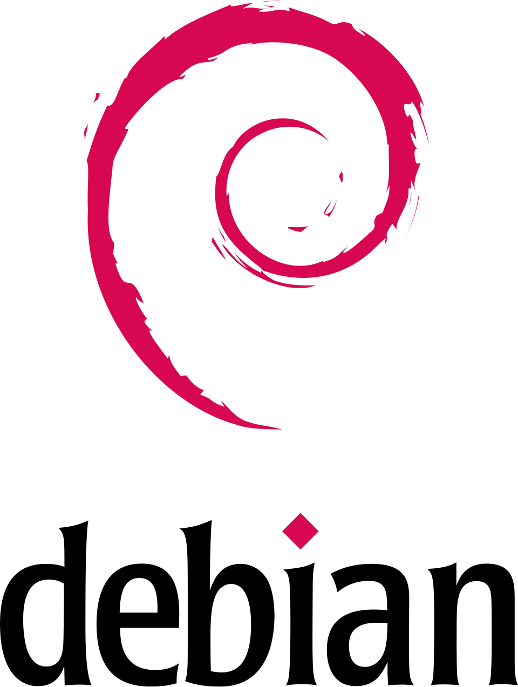
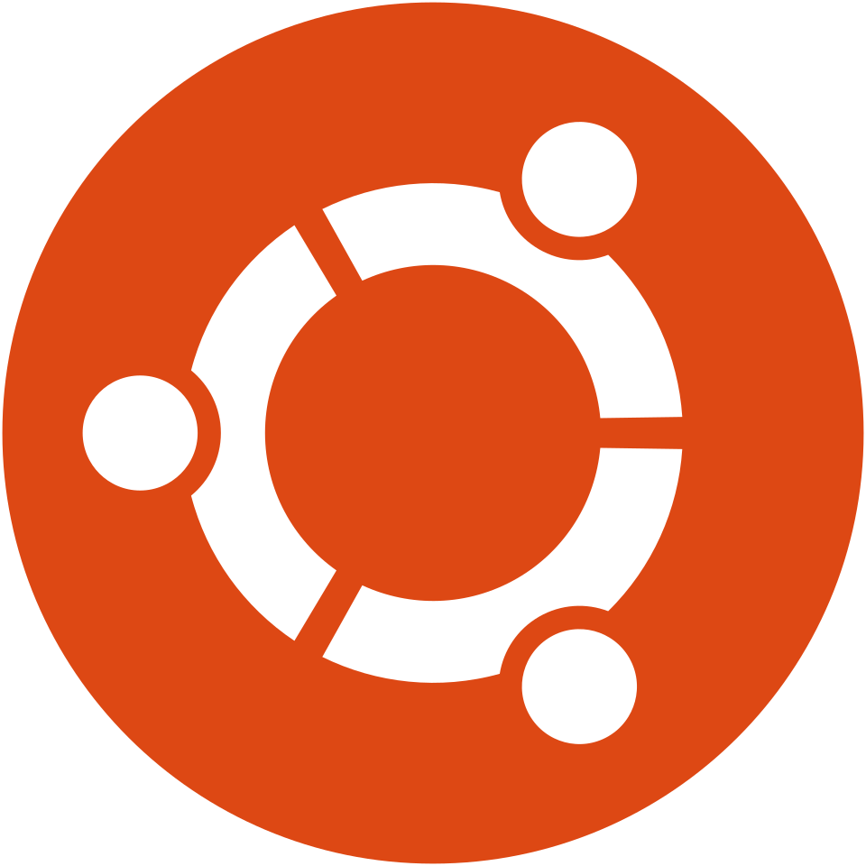

هماهنگ با اوبونتو ۲۶.۰۴ LTS — برای عموم مردم و برنامهنویسان


با بیش از ۵۰ دستور واقعی در ترمینالنما، ۵ نمودار آموزشی، چیتشیت کامل، گلاساری فارسی–انگلیسی و برنامه تمرین ۹۰ روزه
۱۴۰۵ · نسخه آموزشی عمومی
درباره این کتابصفر تا صد لینوکس
این کتاب برای کهن است؟
برای هر کسی که میخواهد بدون مشکل با لینوکس کار کند: کاربر عادی که میخواهد سیستمعامل آزاد را تجربه کند، دانشجو و کاربر کنجکاو، و برنامهنویس تازهکار تا پیشرفته که میخواهد ترمینال، اسکریپتنویسی و ابزارهای توسعه را در سطح حرفهای بلد باشد. پیشنیازی لازم نیست؛ از نصب شروع میکنیم.
دو بخش، یک سفر
بخش اول (فصلهای ۱ تا ۳): ورود بیدردسر — شناخت لینوکس، نصب روی ماشین مجازی یا WSL، و کار روزمره با دسکتاپ. بخش دوم (فصلهای ۴ تا ۱۴): قدرت واقعی — ترمینال، فایلها، فایلسیستم، متن و grep، دسترسیها و sudo، مدیر بسته، پردازشها و سرویسها، شبکه و SSH، بش اسکریپتنویسی و جعبهابزار برنامهنویس (git، پایتون، نود، داکر).
هماهنگ با نسخههای روز
مرجع این دوره اوبونتو ۲۶.۰۴ LTS «Resolute Raccoon» است (کرنل ۷.۰ و گنوم ۵۰) — نسخهای با پشتیبانی تا ۲۰۳۱. تقریباً همهچیز روی نسخههای LTS قبلی و سایر توزیعها هم یکسان است؛ هرجا تفاوت مهم باشد، جداگانه گفتهایم.
چطور از این کتاب استفاده کنیم؟
هر فصل با فهرست «در این فصل یاد میگیرید» شروع میشود؛ اول آن را بخوانید.
همهی دستورها داخل بلاکهای ترمینالنما هستند؛ حتماً همزمان در سیستم خودتان تایپشان کنید — این دوره با خواندن یاد گرفته نمیشود، با اجرا.
جعبههای رنگی راهنمای شماست: نکته برای ترفندها، هشدار برای خطاهای پرریسک، جمعبندی برای مرور و تمرین برای عمل.
فصل آخر چیتشیت، گلاساری و برنامه ۹۰ روزه دارد؛ چاپش کنید و کنار کیبورد بگذارید.
⚠️یادداشت ایمنی
تمام تمرینهای این کتاب برای اجرا در ماشین مجازی یا WSL طراحی شدهاند تا هیچ ریسکی برای سیستم اصلی شما نداشته باشد. دستورهای حذف (بهویژه rm -rf) را هرگز روی سیستم کاری واقعی تمرین نکنید، دستورهای ناشناس اینترنتی را بدون فهمیدن اجرا نکنید و روی سرورهای واقعی، قبل از هر تغییر با تیم مسئول هماهنگ باشید. قدرت ترمینال، قدرتِ مسئولیت است.
در این فصل میفهمیم «لینوکس» دقیقاً به چه چیزی گفته میشود، چرا از گوشی همراه تا ابرکاهینهای دنیا روی آن اجرا میشود، و در پایان با یک نقشهی واضح انتخاب میکنیم کدام توزیع را برای شروع نصب کنیم.
در این فصل یاد میگیرید
تفاوت «کرنل لینوکس» و «توزیع لینوکسی» را توضیح دهید
سه خانواده اصلی توزیعها را بشناسید و مقایسه کنید
بر اساس هدف خودتان، توزیع شروع را انتخاب کنید
با داستان پیدایش لینوکس و منطق نرمافزار آزاد آشنا شوید
۴
فصل ۱ — لینوکس چیست و چرا همهجا هست؟صفر تا صد لینوکس
۱-۱ | یک تعریف دقیق و ساده
«لینوکس» در اصل نام کرنل است؛ یعنی هستهی سیستمعامل: نرمافزاری که منابع سختافزار (پردازنده، حافظه، دیسک، شبکه) را مدیریت میکند و بقیهی برنامهها را به زندگی میرساند. اما در گفتار روزمره، وقتی میگوییم «لینوکس» منظورمان یک توزیع لینوکسی (Distribution) است: بستهی کاملی شامل کرنل لینوکس + ابزارهای سیستمی + محیط گرافیکی + نرمافزارهای کاربردی + یک «مدیر بسته» برای نصب نرمافزار. اوبونتو، فدورا، مینت و دبیان همه «توزیع»اند؛ چیزی مثل یک سازه یکسان با سلیقهها و ابزارهای متفاوت.
پس وقتی میپرسند «کدام لینوکس را نصب کنم؟» سؤال درست این است: «کدام توزیع؟». و خبر خوب اینکه برای یادگیری، تفاوت توزیعها سطحیتر از چیزی است که فکر میکنید: ۹۰ درصد آنچه در این دوره میآموزید، در همهی توزیعها یکسان است.
📖یک ایمیل که دنیای نرمافزار را عوض کرد
در اوت ۱۹۹۱، دانشجویی ۲۱ ساله در فنلاند به نام لینوس توروالدز در گروه خبری اینترنتی نوشت: «من یک سیستمعامل آزاد میسازم (فقط یک سرگرمی است، چیزی بزرگ و حرفهای مثل gnu نخواهد شد)». همان «سرگرمی»، امروز بر میلیاردها دستگاه اجرا میشود. لینوس نسخهی اولش را با مجوزی منتشر کرد که اجازه میداد هر کسی کد را ببیند، تغییر دهد و بازنشر دهد؛ هزاران برنامهنویس داوطلب از سراسر دنیا به آن اضافه کردند و مدل «نرمافزار آزاد و متنباز» را به قلب صنعت نرمافزار بردند. اسم «لینوکس» هم ترکیبی از «لینوس» و «یونیکس» است — و لوگوی پنگوئن Tux را که میبینید، از آن روزها ماندگار شده است.
۱-۲ | چرا لینوکس همهجا هست؟
نگاهی به اطراف بیندازید: لینوکس در همهجاست، حتی اگر ندیدهاش باشید.
دوره کامل تصویری — نسخه آموزشی۵
فصل ۱ — لینوکس چیست و چرا همهجا هست؟صفر تا صد لینوکس
سرورها و ابر: بخش غالب سرورهای وب دنیا و زیرساختهای ابری (از Amazon AWS تا گوگل) روی لینوکس اجرا میشوند.
اندروید: سیستمعامل گوشی همراه شما، در واقع روی کرنل لینوکس اجرا میشود؛ یعنی میلیاردها دستگاه «لینوکسی» در جیب مردم است.
ابرکامپیوترها: تمام ابرکامپیوترهای برتر فهرست Top500 دنیا روی لینوکس اجرا میشوند.
چرا؟ چهار دلیل اصلی: مجانی و آزاد بودن (بدون هزینهی مجوز برای هزاران سرور)، پایداری (سرورهایی که سالها بدون ریاستارت کار میکنند)، امنیت و شفافیت (کد عمومی است و میلیونها چشم آن را میبینند) و کنترل کامل (هر رفتاری را میتوانید تنظیم کنید، از رابط کاربری تا کرنل).
💡«متنباز» یعنی چه؟
نرمافزار متنباز یعنی کد منبعش برای همه قابل مشاهده، قابل استفاده، قابل تغییر و قابل بازنشر است. این یعنی هیچ شرکت منفردی «مالک» راه شما نیست؛ جامعهای جهانی از توسعهدهندگان آن را نگه میدارد. لینوکس معروفترین فرزند این فلسفه است و به همین دلیل برای یادگیری عمیق برنامهنویسی و کار با سرورها، بهترین زمین تمرین دنیاست.
۱-۳ | جنگل توزیعها: سه خانواده اصلی
صدها توزیع وجود دارد اما همگی حول سه خانوادهی بزرگ شکل گرفتهاند؛ تفاوت اصلیشان در «مدیر بسته» و فلسفهی انتشار است:
دوره کامل تصویری — نسخه آموزشی۶
فصل ۱ — لینوکس چیست و چرا همهجا هست؟صفر تا صد لینوکس
شکل ۱-۱: خانوادههای اصلی توزیعهای لینوکسی و معروفترین اعضای هر یک
خانواده
مدیر بسته
فلسفه
معروفها
مناسب برای
دبیانی
APT (.deb)
پایداری و بلوغ
دبیان، اوبونتو، مینت
شروع، عموم مردم، سرور
ردهتی
DNF (.rpm)
فناوریهای نو، سازمانی
فدورا، RHEL، سنتوسها
محیطهای سازمانی، سرورهای شرکتها
آرچی
pacman
ساده، بهروز، «خودت بساز»
آرچ، مانجارو
کاربران با تجربه، علاقهمند به جزئیات
برای کاربر عادی و برنامهنویس تازهکار، اوبونتو LTS (یا مینت که چهرهی ویندوزیتری دارد) بهترین نقطهی شروع است: بیشترین آموزشهای اینترنتی، بیشترین پاسخها در استکاورفلو و سادهترین نصب را دارد. نسخههای LTS نسخههای «پشتیبانی بلندمدت» هستند: هر دو سال در فروردین/آوریل منتشر میشوند و پنج سال آپدیت امنیتی میگیرند. جدیدترین آنها هنگام نوشتن این کتاب، اوبونتو ۲۶.۰۴ LTS با نام رمز «Resolute Raccoon» است (انتشار آوریل ۲۰۲۶؛ کرنل ۷.۰ و دسکتاپ گنوم ۵۰) که تا ۲۰۳۱ پشتیبانی میشود — کل این دوره بر همین نسخه تنظیم شده است. فدورا انتخاب اکیداً بهروزهاست و آرچ، سعادتِ بعد از یادگیری است!
۱-۴ | کدام مسیر برای من؟ انتخاب خود را ثبت کنید
قبل از فصل بعد، مسیر خودتان را مشخص کنید تا در فصل ۲ همان را نصب کنید:
دوره کامل تصویری — نسخه آموزشی۷
فصل ۱ — لینوکس چیست و چرا همهجا هست؟صفر تا صد لینوکس
کاربر عمومی و کنجکاو: اوبونتو دسکتاپ در ماشین مجازی (فصل ۲، مسیر الف) — بدون هیچ ریسکی برای ویندوز یا مک فعلیتان.
کاربری که میخواهد ویندوز را کامل کنار بگذارد: بعد از تمرین در VM، نصب موازی (Dual Boot) — در فصل ۲ اصولش را میخوانید.
برنامهنویس ویندوزی: WSL2 (لینوکس واقعی داخل ویندوز، مسیر ج) برای ابزارهای خط فرمان + یک VM برای تجربهی دسکتاپ.
متخصص آیندهی سرور: هر توزیعی برای شروع خوب است؛ بازار کار سرور عمدتاً اوبونتویی/دبیانی و ردهتی است.
⚠️سه باور غلط که همین حالا دور بریزید
(۱) «لینوکس فقط خط فرمان است» — دسکتاپهای امروزی مثل گنوم از ویندوز هم خوشطرحترند. (۲) «لینوکس برای هکرهاست» — برای همهاست؛ مادربزرگها هم میتوانند با مینت ایمیل چک کنند. (۳) «روی لینوکس هیچ نرمافزاری نیست» — برای ۹۵٪ نیازهای روزمره معادل موباجالی وجود دارد و برای بقیه، راهحلهایی مثل Wine یا ماشین مجازی هست.
✏️تمرین فصل ۱
در یک فایل یا دفترچه بنویسید: (۱) سه جایی که امروز بدون دانستن از لینوکس استفاده کردهاید. (۲) توزیعی که انتخاب کردهاید و دلیلش در یک جمله. (۳) یک سؤال که هنوز ذهنتان را مشغول کرده تا در پایان دوره به آن پاسخ دهید. این صفحه را تاریخ بزنید؛ در فصل ۱۴ به آن برمیگردید.
🔑جمعبندی فصل ۱
لینوکس = کرنل؛ چیزی که نصب میکنیم = توزیع. تفاوت توزیعها عمدتاً مدیر بسته و سلیقهی نرمافزار است.
لینوکس در سرورها، اندروید، ابرکامپیوترها و دستگاههای هوشمند حاکم است؛ دلیلش آزادی، پایداری، امنیت و کنترل است.
سه خانوادهی اصلی: دبیانی (apt)، ردهتی (dnf)، آرچی (pacman)؛ برای شروع، اوبونتو بهترین انتخاب عمومی است.
مسیر نصب خود را انتخاب کردید: ماشین مجازی، دوبوت یا WSL — فصل ۲ منتظرتان است.
دوره کامل تصویری — نسخه آموزشی۸
دوره کامل صفر تا صدفصل ۲
فصل
۲
راهاندازی؛ لینوکس را نصب کنید بدون استرس
در این فصل از صفر، لینوکس را روی سیستم خودتان اجرا میکنید: مسیر امن ماشین مجازی، مسیر برنامهنویسی WSL و اصول نصب واقعی — قدمبهقدم و بدون ترس.
در این فصل یاد میگیرید
چهار راه اجرای لینوکس را مقایسه و مسیر مناسب خود را اجرا کنید
اوبونتو را در VirtualBox نصب کنید و اولین لاگین را انجام دهید
بعد از نصب، سیستم را بهروز کنید
با WSL2، لینوکس واقعی را داخل ویندوز اجرا کنید
۹
فصل ۲ — راهاندازی؛ لینوکس را نصب کنید بدون استرسصفر تا صد لینوکس
۲-۱ | چهار راه برای داشتن لینوکس
هیچ راه اشتباهی نیست؛ هر مسیر برای هدفی طراحی شده:
مسیر
چیست
مزیت
محدودیت
مناسب برای
ماشین مجازی (VM)
لینوکس داخل یک پنجره روی سیستم فعلی
کاملاً امن و برگشتپذیر
کمی کندتر؛ نیاز به رم کافی
شروع یادگیری (پیشنهاد ما)
دوبوت (Dual Boot)
لینوکس کنار ویندوز روی دیسک واقعی
سرعت واقعی سختافزار
نصب حساستر؛ ریسک اشتباه پارتیشن
جدیهای مهاجرت
لایو USB
اجرای لینوکس از فلش بدون نصب
تست بدون تغییر سیستم
هیچ چیزی ذخیره نمیماند
تست سختافزار
WSL2
لینوکس واقعی داخل ویندوز
ادغام عالی با ابزارهای توسعه
دسکتاپ گرافیکی محدود
برنامهنویسهای ویندوزی
💡پیشنهاد مسیر ما
اگر اولین بار است: ماشین مجازی. هیچچیز روی سیستم اصلیتان تغییر نمیکند، هر اشتباهی با یک کلیک «بازنشانی» میشود و میتوانید با خیال راحت همهی دستورهای این دوره را امتحان کنید — حتی rmهای خطرناک! وقتی از ترمینال راحت شدید، سراغ دوبوت یا نصب کامل بروید.
۲-۲ | نصب اوبونتو ۲۶.۰۴ LTS در VirtualBox؛ مسیر الف قدمبهقدم
دانلود VirtualBox (نسخه ۷.۲ یا جدیدتر) از virtualbox.org و نصب با Nextهای معمولی.
دانلود اوبونتو ۲۶.۰۴ LTS «Resolute Raccoon» از ubuntu.com/download/desktop — حتماً نسخهی LTS که کنارش برچسب «Long-term support» دارد؛ یعنی پنج سال آپدیت امنیتی تا ۲۰۳۱. فایل ISO حدود ۶ گیگابایت است؛ در ساعات آرام اینترنت دانلود کنید. (نسخههای موقت مثل ۲۶.۱۰ فقط ۹ ماه پشتیبانی دارند — برای یادگیری LTS بگیرید.)
در VirtualBox روی New بزنید؛ نام: «Ubuntu-Learn»، فایل ISO را انتخاب و نام کاربری/رمز را همانجا تعیین کنید. رم (RAM): ۴ گیگابایت (اگر سیستمتان ۱۶ گیگ دارد، ۸ گیگ بهتر)، پردازنده: ۲ هسته، دیسک: ۳۰ گیگابایت کافی است.
Start را بزنید. نصب اوبونتو شروع میشود: زبان فارسی یا انگلیسی، «Install Ubuntu»، گزینهی پیشفرض پاکسازی (فقط دیسک مجازی VM را پاک میکند، نه سیستم واقعیتان!)، منطقهی زمانی تهران، نام کاربری و رمز.
بعد از حدود ۱۰ دقیقه، نصب تمام است؛ Reboot بزنید و به صفحهی لاگین برسید. تبریک — لینوکس دارید!
دوره کامل تصویری — نسخه آموزشی۱۰
فصل ۲ — راهاندازی؛ لینوکس را نصب کنید بدون استرسصفر تا صد لینوکس
💡این دوره روی چه چیزی تنظیم شده است؟
مرجع این کتاب اوبونتو ۲۶.۰۴ LTS «Resolute Raccoon» است: کرنل Linux 7.0، دسکتاپ گنوم ۵۰ و نشست گرافیکی کاملاً Wayland (اوبونتو ۲۶.۰۴ X11 را از نشست دسکتاپ کنار گذاشته — نامش را در Settings ← About میبینید؛ برای شما هیچ کاری لازم نیست). تقریباً همهی این دوره روی اوبونتو ۲۴.۰۴ LTS و سایر توزیعهای دبیانی هم یکسان اجرا میشود؛ هرجا تفاوت مهم باشد، جداگانه اشاره میکنیم.
⚠️دو نکته مهم ماشین مجازی
(۱) برای اینکه پنجرهی VM تمامصفحه شود، داخل اوبونتو «Guest Additions» را نصب کنید یا در VirtualBox از منوی Devices گزینهی Insert Guest Additions CD را بزنید. (۲) برای آزادکردن موس از داخل VM، کلید Host (پیشفرض: Ctrl سمت راست) را بزنید — اولین گیرِ همهی تازهکارها همین است!
۲-۳ | بعد از نصب؛ سه کار اول
به ترتیب انجام دهید؛ این سه کار «آیین عبور» هر لینوکسی تازهنفس است:
# باز کردن ترمینال: Ctrl+Alt+T — سپس بهروزرسانی فهرست بستهها$sudo apt update# ارتقای همه بستههای نصبشده به آخرین نسخه$sudo apt upgrade -y# نصب دو ابزار دوستداشتنی این دوره$sudo apt install -y htop tree
دستور sudo یعنی «این کار را با دسترسی مدیر انجام بده» و رمز شما را میپرسد (وقتی تایپ میکنید هیچ ستاره یا حرفی نمایش داده نمیشود — کاملاً طبیعی است، تایپ کنید و Enter بزنید). apt update فهرست نسخههای جدید را میگیرد و apt upgrade خود نرمافزارها را ارتقا میدهد — این دو را هفتهای یکبار اجرا کنید.
۲-۴ | مسیر ج: WSL2 برای برنامهنویسهای ویندوزی
اگر ویندوز ۱۰/۱۱ دارید، سریعترین راه داشتن «لینوکس واقعی» همین است: PowerShell را با دسترسی Administrator باز کنید و فقط این را اجرا کنید:
$wsl --install
دوره کامل تصویری — نسخه آموزشی۱۱
فصل ۲ — راهاندازی؛ لینوکس را نصب کنید بدون استرسصفر تا صد لینوکس
این دستور WSL2 و یک اوبونتوی کامل نصب میکند. ریاستارت کنید، نام کاربری و رمز لینوکسی بسازید و بعد از آن، با اجرای wsl یا باز کردن «Ubuntu» از منوی استارت، داخل ترمینال لینوکسی واقعی هستید: همان apt، همان bash، همان همهچیز. فایلهای ویندوزتان هم از مسیر /mnt/c در دسترساند. برای برنامهنویسی (فصل ۱۳) همین مسیر طلایی است.
⚠️قبل از دوبوت واقعی
اگر قصد نصب موازی روی دیسک واقعی دارید: حتماً بکاپ کامل بگیرید، در ویندوز فضای حداقل ۵۰ گیگابایت خالی بسازید (Disk Management > Shrink)، و Secure Boot/Fast Startup را طبق مستندات توزیع تنظیم کنید. اشتباه در انتخاب پارتیشن، تنها جایی است که داده از دست میرود — با حوصله انجام دهید یا در VM تمرین کنید.
✏️تمرین فصل ۲
محیط لینوکسی خود را راه بیندازید (VM یا WSL) و سه کار اول بخش ۲-۳ را انجام دهید. بعد در ترمینال دستور uname -a را اجرا کنید — همین خروجی کوتاه، نسخهی دقیق کرنل لینوکسی شماست؛ آن را در دفترچه یادداشت کنید. آخرین قدم: با دستور tree -L 1 / نگاهی به ریشهی سیستم بیندازید و فقط از دیدنِ نام پوشهها چیزهایی حدس بزنید — فصل ۶ همه را باز میکند.
🔑جمعبندی فصل ۲
چهار مسیر: VM (امنترین)، دوبوت (جدیترین)، لایو USB (تستی) و WSL2 (برنامهنویسی ویندوزی).
اوبونتو LTS در VirtualBox با ۴ گیگ رم و ۲۵ گیگ دیسک؛ نصب دهدقیقهای.
آیین عبور: sudo apt update ← apt upgrade -y ← نصب ابزارها؛ sudo یعنی دسترسی مدیر و رمز نامرئی است.
uname -a هویت سیستم شماست؛ WSL2 با یک دستور نصب میشود و لینوکس واقعی است.
دوره کامل تصویری — نسخه آموزشی۱۲
دوره کامل صفر تا صدفصل ۳
فصل
۳
دسکتاپ لینوکس؛ استفاده روزمره بدون ترمینال
لینوکس فقط ترمینال نیست. در این فصل با محیط گرافیکی راه میآیید: مرور فایلها، نصب نرمافزار با چند کلیک، تنظیم فارسی و کارهای روزمره — دقیقاً مثل هر سیستمعامل دیگری، حتی راحتتر.
در این فصل یاد میگیرید
محیطهای دسکتاپ را بشناسید و تفاوتشان را بدانید
در گنوم کار روزمره را بدون ترمینال انجام دهید
فارسی و کیبورد فارسی را تنظیم کنید
نرمافزارهای معادل ویندوزی را نصب کنید
۱۳
فصل ۳ — دسکتاپ لینوکس؛ استفاده روزمره بدون ترمینالصفر تا صد لینوکس
۳-۱ | محیط دسکتاپ؛ پوستهی قابلتعویض
در ویندوز، ظاهر سیستم با خود سیستم گره خورده است؛ در لینوکس، محیط گرافیکی (Desktop Environment) یک قطعهی جداست که میتوانید عوضش کنید. سه محیط پرطرفدار:
محیط
حس و حال
مصرف منابع
مناسب برای
GNOME
مدرن، مینیمال، جریانمحور — نسخه ۵۰ در اوبونتو ۲۶.۰۴
متوسط
اوبونتو و فدورا (پیشفرض)
KDE Plasma
پرامکانات، قابل تنظیم تا آخرین پیکسل
متوسط
عاشقان شخصیسازی، ویندوزیها
XFCE
ساده و سبک
خیلی کم
لپتاپهای قدیمی، مینت XFCE
اوبونتویی که در فصل ۲ نصب کردید، گنوم ۵۰ دارد و مثل همهی اوبونتوی ۲۶.۰۴ کاملاً روی Wayland اجرا میشود (پروتکل جدید نمایشگر که جایگزین X11 شده — نام آن را در Settings ← About میبینید؛ هیچ کاری لازم نیست بکنید و همهچیز بیصدا کار میکند). اگر بعداً خواستید KDE را امتحان کنید، لازم نیست سیستم را عوض کنید — فقط بستهاش را نصب میکنید و در صفحهی لاگین انتخابش میکنید! این «آزادیِ پوسته» یکی از زیباترین ویژگیهای لینوکس است.
۳-۲ | گنوم در پنج دقیقه
سه کلید اصلی گنوم: کلید Super (لوگوی ویندوز روی کیبورد!) که مرکز فعالیتها (Activities) را باز میکند، Dock کنار صفحه برای برنامههای محبوب، و نوار بالای صفحه که ساعت، شبکه، صدا و منوی سیستم در آن است. جستوجو همهچیز را حل میکند: کلید Super را بزنید و شروع به تایپ کنید — برنامه، فایل یا حتی تنظیمات پیدا میشود.
مرور فایلها: برنامهی Files (ناتیلوس)؛ سایدبار سریع به Documents و Downloads و...، نمایش لیستی/آیکونی، و Ctrl+H برای دیدن فایلهای مخفی.
نصب نرمافزار با کلیک: برنامهی App Center/Software — مثل اپاستور: جستوجو، Install، تمام. بدون سر زدن به سایتهای نرمافزار و دانلود EXE.
گرفتن اسکرینشات: کلید PrintScreen — تصاویر در Pictures/Screenshots ذخیره میشوند.
دوره کامل تصویری — نسخه آموزشی۱۴
فصل ۳ — دسکتاپ لینوکس؛ استفاده روزمره بدون ترمینالصفر تا صد لینوکس
💡کیبورد میانبرهای طلایی گنوم
Super = جستوجوی همهچیز | Alt+Tab = جابهجایی بین برنامهها | Super+D (یا Ctrl+Super+D) = نمایش دسکتاپ | Ctrl+Alt+T = ترمینال | Super+L = قفل صفحه | Ctrl+Alt+جهتنما = جابهجایی بین دسکتاپهای مجازی. هفتهای که اینها را عادت کنید، سرعتتان از قبل هم بیشتر میشود.
۳-۳ | فارسیسازی؛ زبان و کیبورد
لینوکس از فارسی کامل پشتیبانی میکند: Settings ← Region & Language ← Language برای فارسیکردن کل رابط، و Settings ← Keyboard ← Input Sources ← Add ← Persian برای کیبورد فارسی. بعد از آن، با کلید Super+Space بین فارسی و انگلیسی جابهجا میشوید (همان عادت ویندوزی!). برای فونتهای فارسی خوشظاهر، بستهی fonts-farsiweb یا فونتهای «وزیرمتن» را میتوانید نصب کنید — و بله، نیمفاصله و اعرابگذاری هم بهدرستی کار میکند.
۳-۴ | نرمافزارهای روزمره؛ جدول معادلها
کار روزمره
در ویندوز
معادل در لینوکس
مرورگر
کروم/اج
فایرفاکس (پیشفرض)، کروم، بریو
آفیس
Microsoft Office
لیبرهآفیس (Word/Excel/PowerPoint)
پخش ویدیو
VLC
VLC — همین نسخه!
ویرایش تصویر
فتوشاپ
GIMP
ویرایش ویدیو
Premiere
Kdenlive
پیامرسان
Telegram Desktop
تلگرام دسکتاپ رسمی
کدنویسی
VS Code
VS Code (نسخه رسمی لینوکسی)
دوره کامل تصویری — نسخه آموزشی۱۵
فصل ۳ — دسکتاپ لینوکس؛ استفاده روزمره بدون ترمینالصفر تا صد لینوکس
همهی اینها را از App Center میتوانید با یک کلیک نصب کنید. برای کروم و VS Code که در مخزن رسمی نیستند، فایل .deb را از سایت رسمیشان دانلود و با دوبار کلیک نصب میکنید — در فصل ۹ منطق پشت این کار را کامل میفهمید.
✏️تمرین فصل ۳
در محیط دسکتاپتان: (۱) کیبورد فارسی را اضافه کنید و یک پاراگراف فارسی در Text Editor تایپ کنید. (۲) VLC را از App Center نصب کنید و یک ویدیو پخش کنید. (۳) یک دسکتاپ مجازی جدید بسازید و یک پنجره به آن ببرید. (۴) تم تاریک را فعال کنید. چهار کار بالا را بدون کمک ترمینال انجام دادهاید؟ تبریک؛ شما همین حالا کاربر لینوکس هستید — فصلهای بعدی شما را به «کاربر قدرتمند» ارتقا میدهند.
🔑جمعبندی فصل ۳
محیط دسکتاپ (گنوم/KDE/XFCE) قطعهای جداشدنی است؛ پیشفرض اوبونتو گنوم است.
کلید Super + تایپ = دسترسی سریع به همهچیز؛ App Center = نصب نرمافزار با کلیک.
فارسیسازی کامل با چند کلیک در Settings انجام میشود؛ Super+Space تعویض زبان است.
برای ۹۵٪ نیازهای روزمره، معادل مستقیم وجود دارد؛ لیست معادلها را نگه دارید.
دوره کامل تصویری — نسخه آموزشی۱۶
دوره کامل صفر تا صدفصل ۴
فصل
۴
ترمینال و پوسته؛ در خانه خودتان باشید
ترمینال قلب لینوکس است — و برخلاف شهرتش، نه ترسناک است و نه مخصوص هکرها؛ فقط یک گفتوگوی متنی سریع با سیستم. در این فصل زبان این گفتوگو را یاد میگیرید و برای همیشه راحت میشوید.
در این فصل یاد میگیرید
ترمینال و پوسته (Shell) را از هم تشخیص دهید و بدون ترس کار کنید
آناتومی یک دستور را بشناسید: فرمان، گزینه، آرگومان
مستندات هر دستور را با man و help بخوانید
میانبرهای تکمیل خودکار و تاریخچه را به کار ببرید
۱۷
فصل ۴ — ترمینال و پوسته؛ در خانه خودتان باشیدصفر تا صد لینوکس
۴-۱ | ترمینال چیست و پوسته چیست؟
پوسته (Shell) برنامهای است که متنهای شما را میخواند، معنی میکند و به سیستم اجرا میدهد. مشهورترین پوسته bash است (Bourne Again SHell) — همان که در اوبونتو پیشفرض است. ترمینال اما پنجرهای است که این پوسته داخلش اجرا میشود؛ پوسته موتور است، ترمینال کاپوت و داشبورد. روزگاری همهی کامپیوتر همین ترمینال بود؛ امروز هم وقتی به یک سرور وصل میشوید (فصل ۱۱)، زبان مشترکتان همان است — به همین دلیل ترمینال مهارت شماره یک کار با لینوکس است.
بازش کنید: Ctrl+Alt+T. یک خط میبینید مثل: mehdi@ubuntu:~$. این خط «پرامپت» نام دارد و سه چیز میگوید: نام کاربری (mehdi)، نام سیستم (ubuntu)، و مکان فعلی (~ یعنی پوشهی خانگی — فصل ۵). علامت $ یعنی «منتظر دستور توام». به همین راحتی؛ سیستم دستور میکشد، شما تایپ میکنید.
💡ترسِ اول را همین امروز بکُشید
چهار دستور کاملاً بیخطر را همین حالا تایپ کنید — هیچکدام چیزی را تغییر نمیدهند: date (تاریخ و ساعت)، echo salam (چاپ متن)، uptime (سن روشن بودن سیستم)، و clear (تمیزکردن صفحه). دیدید؟ ترمینال فقط یک گفتوگوی سریع است. با فلش بالا میتوانید دستورهای قبلی را برگردانید — هیچوقت دستور را دوباره تایپ نکنید!
۴-۲ | آناتومی یک دستور
هر دستور لینوکسی از یک الگوی ساده پیروی میکند. این شکل را حفظ کنید؛ کل دوره با همین زبان مینویسد:
شکل ۴-۱: آناتومی یک دستور؛ پرامپت، فرمان، گزینهها و آرگومان
دوره کامل تصویری — نسخه آموزشی۱۸
فصل ۴ — ترمینال و پوسته؛ در خانه خودتان باشیدصفر تا صد لینوکس
قطعه
مثال
نقش
پرامپت
mehdi@ubuntu:~$
آمادهبودن سیستم؛ تایپ نمیکنیم، سیستم مینویسد
فرمان
ls
چه کاری انجام شود
گزینه (Option)
-l یا -lh
«چگونه» انجام شود؛ معمولاً با - شروع میشود
آرگومان
~/Documents
«روی چه چیزی» انجام شود
مثال: در ls -lh ~/Documents گفتهایم فهرستِ پوشهی Documents را نشان بده (فرمان ls)، بهصورت لیست بلند (-l) و با اندازههای خوانا (-h از کلمهی human). گزینههای یک حرفی را میتوان درهمکشید: -lh همان -l -h است.
۴-۳ | مستندات؛ کسی در لینوکس بیجواب نمیماند
هر دستور یک کتابچهی رسمی دارد. دستور man ls را اجرا کنید: مستندات کامل ls باز میشود؛ با فلشها اسکرول کنید، / را بزنید و کلمهای را جستوجو کنید، و با کلید q خارج شوید. راه سریعتر، گزینهی --help است: ls --help خلاصهی کاربردی را میدهد. عادت طلایی: قبل از پرسیدن از دیگران، یک بار man را بخوانید. از همین حالا برای man man امتحان کنید — مستنداتِ خودِ مستندات!
💡سه میانبری که زندگی را عوض میکنند
(۱) Tab = تکمیل خودکار: چند حرف اولِ دستور یا فایل را تایپ و Tab بزنید؛ اگر یکتا باشد کامل میشود، اگر چند گزینه باشد دوبار Tab گزینهها را نشان میدهد. (۲) فلش بالا/پایین = مرور تاریخچهی دستورها. (۳) Ctrl+R = جستوجوی معکوس در تاریخچه؛ حرف اول دستور قبلی را تایپ کنید. با این سهتا، سرعت شما ده برابر میشود.
دوره کامل تصویری — نسخه آموزشی۱۹
فصل ۴ — ترمینال و پوسته؛ در خانه خودتان باشیدصفر تا صد لینوکس
۴-۴ | قوانین زمین: چیزهایی که بهسرعت باید بدانید
همهچیز حساس به بزرگیوکوچکی حروف است:File.txt و file.txt دو فایل متفاوتاند؛ LS دستور نیست، ls است.
فاصله جداکننده است:ls-l با ls -l یکی نیست! در فصل ۱۲ برای فایلهایی با فاصله ترفند گیومه را میآموزیم.
Ctrl+C = قطع اجرا: دستوری گیر کرد یا خروجی بیپایان داد؟ Ctrl+C بزنید؛ پوسته برمیگردد.
exit یا Ctrl+D = بستن ترمینال؛ و در سرورها = قطع اتصال.
⚠️قانون طلایی ایمنی در ترمینال
دستورهای ناشناس را از اینترنت کورکورانه اجرا نکنید — مخصوصاً اگر در آنها rm، sudo یا لولهکشی به bash دیده میشود. قبل از اجرا: اول با man بفهمید چه میکند. و قانون دوم: sudo فقط وقتی لازم است، نه همیشه؛ با دسترسی مدیر، اشتباه هم بزرگ میشود. در فصل ۸ منطق دسترسیها را کامل میفهمید.
✏️تمرین فصل ۴
(۱) با Tab، دستور fire را تایپ کنید و ببینید تکمیلشده چه میشود. (۲) man date را باز کنید، گزینهای پیدا کنید که تاریخ را فقط بهصورت سال-ماه-روز نشان دهد و امتحانش کنید. (۳) با Ctrl+R دستور sudo apt update را بدون تایپ دوباره پیدا و اجرا کنید. (۴) یک دستور اشتباه عمداً بزنید (مثلاً list) و پیام خطا را با دقت بخوانید — «command not found» از فردا برای شما ترس ندارد.
man و --help پاسخ همهی سؤالهاست؛ q خروج از man و Ctrl+C قطع اجرا.
Tab و فلش بالا و Ctrl+R سه ابرمیانبر شما هستند؛ از فردا بدون آنها زندگی نکنید!
دوره کامل تصویری — نسخه آموزشی۲۰
دوره کامل صفر تا صدفصل ۵
فصل
۵
پروندهها و پوشهها؛ کار اصلی هر روز
۸۰ درصد کارهای ترمینالی دنیا با حدود ده دستور همین فصل انجام میشود. جابهجایی، فهرستگیری، ساخت، کپی، انتقال و حذف — اینجا تا جایی پیش میرویم که بدون ماوس هم راحت باشید.
در این فصل یاد میگیرید
با ls و گزینههایش خروجی دقیق و خوانا بگیرید
مسیر مطلق و نسبی را مسلط جابهجا شوید
ساخت/کپی/انتقال/حذف را با گزینههای امن انجام دهید
با find و wildcardها فایلها را جستوجو کنید
۲۱
فصل ۵ — پروندهها و پوشهها؛ کار اصلی هر روزصفر تا صد لینوکس
۵-۱ | کجاییم و چه داریم؟ pwd و ls
pwd (مسیر فعلی را چاپ میکند) و ls (محتویات پوشه را نشان میدهد) دو دستور پرتکرار دنیا هستند. اما ls خام مثل نگاه از پشت شیشه است؛ با گزینهها واقعی میشود:
$ls
Desktop Documents Downloads Music Pictures
$ls -l # لیست بلند: مجوزها، مالک، اندازه، تاریخ$ls -lh # همان + اندازههای خوانا (K و M بهجای بایت)$ls -a # فایلهای مخفی را هم نشان بده (شروع با نقطه)$ls -lha # همه با هم — ترکیب موردعلاقه حرفهایها
یک خط واقعی از خروجی ls -lh را با هم بخوانیم:
-rw-r--r-- 1 mehdi mehdi 1.2M Sep 13 14:32 report.pdf
از چپ: نوع فایل و مجوزها (-rw-r--r-- — فصل ۸ کاملش میکند)، تعداد لینک، مالکار، گروه، اندازه (۱٫۲ مگابایت)، تاریخ تغییر و در انتها نام. بعد از این فصل، این خط برای شما مثل سطر یک جدول آشنا خوانده میشود.
۵-۲ | جابهجایی با cd؛ مطلق و نسبی
cd مخفف change directory است و یک آرگومان میگیرد: مقصد. دو سبک آدرسدهی داریم:
مسیر مطلق: از ریشه شروع میشود، مثل /home/mehdi/Documents — همیشه یکتاست، هر جا که باشید همان را میبرد.
مسیر نسبی: از مکان فعلی، مثل Documents/projects — کوتاهتر است اما بستگی به «کجا هستید» دارد.
$cd /home/mehdi/Documents # مسیر مطلق$cd projects # نسبی: وارد زیرپوشه projects شو$cd .. # یک پوشه برو بالا$cd ~ # برو خانه (همان /home/username)$cd - # برگرد به جایی که قبلش بودی!$pwd
/home/mehdi
دوره کامل تصویری — نسخه آموزشی۲۲
فصل ۵ — پروندهها و پوشهها؛ کار اصلی هر روزصفر تا صد لینوکس
چهار نماد را حفظ کنید: ~ خانه، .. پدر، . همینجا، و - قبلی. ترکیبها هم کار میکنند: cd ../.. دو پله بالا میرود.
۵-۳ | ساخت، کپی، انتقال، حذف
$mkdir projects # ساخت پوشه$mkdir -p projects/linux/day1 # ساخت کل زنجیره با هم$touch notes.txt # ساخت فایل خالی$cp notes.txt backup.txt # کپی فایل$mkdir archive # ساخت پوشه مقصد برای انتقال$cp -r projects projects-bak # کپی پوشه با همه محتوا (-r = بازگشتی)$mv backup.txt archive/ # انتقال به پوشه archive$mv notes.txt report.txt # همین mv برای تغییر نام هم هست!$rm archive/backup.txt # حذف فایل$rm -r projects-bak # حذف پوشه پر (-r؛ rmdir فقط پوشه خالی)
دو نکته که هزاران فایل را نجات داده: اول، mv هم «انتقال» است هم «تغییر نام» — به مقصدش بستگی دارد. دوم، rm سطل بازیافت ندارد؛ حذف یعنی حذف. برای حذف پوشههای پر، rm -r projects-bak میخواهید و برای حذف بدون پرسش rm -rf — که قدرتمندترین و خطرناکترین ترکیب لینوکس است: هرگز rm -rf را روی مسیری که با $ یا / شروع میشود و صددرصد مطمئن نیستید اجرا نکنید. عادت ایمن: اول ls روی همان مسیر، بعد rm.
⚠️خطرناکترین دستور دنیا
rm -rf / یعنی «کل سیستم را بدون پرسش حذف کن». سیستمهای جدید یک قفل محافظت دارند اما وابسته به آن نباشید. هر جا دستوری با rm -rf دیدید، قبل از Enter دو بار مسیرش را بخوانید. حرفهایها همیشه با ls مسیر را «پیشبازدید» میکنند.
۵-۴ | جستوجو با wildcard و find
Wildcard ها الگوهای عمومی هستند: * (هر تعداد هر کاراکتر)، ? (دقیقاً یک کاراکتر)، [ab] (a یا b):
دوره کامل تصویری — نسخه آموزشی۲۳
فصل ۵ — پروندهها و پوشهها؛ کار اصلی هر روزصفر تا صد لینوکس
$ls *.txt # همه فایلهای txt$ls report_202?.pdf # report_2021 تا report_2029$ls -d */ # فقط پوشهها$find . -name "*.log" # جستجو از اینجا به پایین$find /home -size +100M # فایلهای بزرگتر از ۱۰۰ مگابایت$du -sh Downloads/ # چند فضا میگیرد؟$df -h # فضای دیسکها چقدر پر است؟
find با شرطهای اندازه، زمان و نام، جستوجوی ویندوزی را خجالتزده میکند. و df -h را به خاطر بسپارید: هر وقت «دیسک پر است» شنیدید، اولین تشخیص همان است.
✏️تمرین فصل ۵
در خانه یک تمرینگاه بسازید: mkdir -p ~/linux-practice/ch05 و داخلش با touch ده فایل با نامهای data01.txt تا data10.txt بسازید (با بریسها: touch data{01..10}.txt — امتحانش کنید!). بعد: فقط فایلهای فرد را با ls data0?1.txt-مانند پیدا کنید، همه را با یک mv به پوشه odd منتقل کنید، یک کپی از کل پوشه بگیرید و در آخر تمرینگاه را با rm -r حذف کنید — ولی اول با ls -R کل محتوایش را ببینید.
🔑جمعبندی فصل ۵
ls -lha لیست کامل و خوانا؛ ستونهای مجوز/مالک/اندازه/تاریخ را میشناسید.
مطلق از / شروع میشود، نسبی از «اینجا»؛ ~ و .. و - سه کلید طلایی cd هستند.
mv = انتقال یا تغییر نام؛ cp -r برای پوشهها؛ rm برگشتپذیر نیست — قبلش ls.
find -name و wildcardها جستوجو را حرفهای میکنند؛ df -h و du -sh نگهبانان فضا.
دوره کامل تصویری — نسخه آموزشی۲۴
دوره کامل صفر تا صدفصل ۶
فصل
۶
نقشه جزیره؛ درخت فایلسیستم لینوکس
در ویندوز چهار درایو C و D دارید؛ در لینوکس یک درخت واحد با ریشه `/`. در این فصل نقشه کل جزیره را در دست میگیرید: هر پوشه چیست، فلشها کجا سوار میشوند و لینکها چه کار میکنند.
در این فصل یاد میگیرید
فلسفه «همهچیز فایل است» و ساختار استاندارد FHS را بفهمید
نقش تکتک پوشههای اصلی را بدانید و در عمل استفاده کنید
دیسک و فلش را mount کنید و فضا را مدیریت کنید
لینک نمادین بسازید و فایلهای مخفی را مدیریت کنید
۲۵
فصل ۶ — نقشه جزیره؛ درخت فایلسیستم لینوکسصفر تا صد لینوکس
۶-۱ | یک درخت، یک ریشه
در ویندوز هر درایو یک جزیره است: C:\ و D:\ و... . در لینوکس همهچیز — دیسکها، فلشها، حتی دستگاهها و اطلاعات پردازنده — به یک درخت واحد با ریشهی / وصل است. دیسک دوم را هم «سوار» (mount) میکنید روی یکی از پوشههای همین درخت. فلسفهی بزرگ پشت این طراحی را لینوکسیها با یک جمله میگویند: «همهچیز فایل است» — تنظیمات کارت گرافیک یک فایل متنی است، اطلاعات حافظه یک فایل است، حتی موس! این یکنواختی، ابزارها را همهجا یکسان میکند: یک cat هم متن میخواند هم تنظیمات.
استاندارد این چیدمان FHS (Filesystem Hierarchy Standard) نام دارد و همهی توزیعهای جدی به آن پایبندند — یعنی چیزی که امروز یاد میگیرید روی سرور شرکت هم همینطور است.
شکل ۶-۱: درخت فایلسیستم لینوکس؛ ریشه و مهمترین شاخهها
دوره کامل تصویری — نسخه آموزشی۲۶
فصل ۶ — نقشه جزیره؛ درخت فایلسیستم لینوکسصفر تا صد لینوکس
۶-۲ | پوشههای مهم؛ جدول مرجع
پوشه
چیست
مثال استفاده
/home/username
خانهی شما؛ همهی فایلهای شخصی
اسناد، دانلودها، پروژهها
/etc
تنظیمات سراسری سیستم (متنی!)
/etc/hosts، پیکربندی سرویسها
/var
دادههای متغیر؛ مهمترینش لاگها
/var/log/syslog
/usr
برنامهها و کتابخانههای نصبشده
/usr/bin اکثر دستورها
/bin و /sbin
دستورهای پایه سیستم
ls، cp، mount
/tmp
فایلهای موقت؛ با ریاستارت پاک میشود
فایلهای گذرا
/opt
نرمافزارهای نصبی شخص ثالث
کروم، برخی IDEها
/dev
دستگاهها بهصورت فایل
دیسکها، ترمینالها
/proc
پنجرهی زنده به کرنل
/proc/cpuinfo
/media، /mnt
نقطهی سوارشدن فلش و دیسک
/media/mehdi/USB
💡دو مسیر که هر روز به آنها سر میزنید
/etc را «دفتر تنظیمات» بدانید و /var/log را «دفتر اتفاقات». وقتی چیزی کار نکرد، لاگ همانجاست؛ وقتی خواستید رفتار سیستمی را عوض کنید، تنظیمش اغلب در /etc است — و همهچیز متنی است، پس grep و cat (فصل ۷) کلید همهی درها هستند.
دوره کامل تصویری — نسخه آموزشی۲۷
فصل ۶ — نقشه جزیره؛ درخت فایلسیستم لینوکسصفر تا صد لینوکس
۶-۳ | دیسکها و mount؛ فلش را وصل کنید
دیسکها و پارتیشنها در /dev بهصورت فایل دیده میشوند: sda (دیسک اول)، sda1 (پارتیشن اول آن)، nvme0n1 (دیسکهای NVMe). دستور lsblk نقشهی درختی همه را نشان میدهد. در دسکتاپ امروزی، فلش را که وصل کنید بهطور خودکار روی /media/username/LABEL سوار میشود و در Files ظاهر میشود — mount دستی فقط وقتی لازم است که سرور بدون دسکتاپ دارید:
$lsblk # نقشه دیسکها و پارتیشنها$sudo mount /dev/sdb1 /mnt/usb # سوار کردن دستی$ls /mnt/usb # محتوای فلش$sudo umount /mnt/usb # جدا کردن (قبل از بیرون کشیدن!)$df -h # پر بودن هر نقطه اتصال
قانون مهم: یک فایلسیستم باید قبل از بیرونکشیدن «پیاده» (umount) شود وگرنه ممکن است دادهی در حال نوشتن از بین برود — همان کاری که «Safely Remove» در دسکتاپ میکند.
۶-۴ | لینکها و فایلهای مخفی
لینک نمادین (Symbolic Link) مثل میانبر ویندوزی است اما در سطح فایلسیستم و برای همهی ابزارها واقعی است:
$ln -s ~/projects/linux ~/linux-shortcut # ساخت لینک$ls -l ~/linux-shortcut # حرف l و فلش -> مقصد$cat /proc/cpuinfo | head -5 # پنجره زنده به سختافزار$ls -a ~ # فایلهای مخفی خانه (نقطهدار)
دوره کامل تصویری — نسخه آموزشی۲۸
فصل ۶ — نقشه جزیره؛ درخت فایلسیستم لینوکسصفر تا صد لینوکس
آن فایلهای مخفی که با نقطه شروع میشوند (مثل .bashrc) تنظیمات برنامهها هستند — در فصل ۱۲ خودمان یکی را ویرایش میکنیم. و یک سرنخ خفن برای کنجکاوها: cat /proc/cpuinfo مدل پردازندهتان را میگوید؛ /proc در واقع پنجرهی زندهی کرنل است، نه فایل واقعی روی دیسک.
📖چرا لینوکس حرف C: ندارد؟
یونیکس در دهه ۷۰ با ایده «درخت واحد» متولد شد؛ ویندوز بعداً با میراث DOS و درایوهای حرفی آمد. درخت واحد یعنی یک برنامه همیشه میداند تنظیمات کجاست (/etc)، لاگ کجاست (/var/log) و کتابخانهها کجاست (/usr/lib) — بدون تفاوتی که دیسک دوم باشد یا پنجم. همین نظم است که چند دهه بعد، مدیریت هزاران سرور ابری را ممکن کرده است. شما امروز دارید همان زبان مشترک را یاد میگیرید.
✏️تمرین فصل ۶
(۱) lsblk و df -h را اجرا کنید و روی کاغذ، دیسکها و پارتیشنهای سیستمتان را نقشه بکشید. (۲) پنج فایل از /etc را با less باز کنید (مثلاً /etc/hosts و /etc/os-release) و ببینید تنظیمات واقعاً متنیاند. (۳) یک لینک نمادین از پوشهی تمرین فصل ۵ بسازید و با ls -l حرف l و فلش را پیدا کنید. (۴) در /var/log بگردید و جدیدترین فایل لاگ را پیدا کنید — بدون بازکردنش!
🔑جمعبندی فصل ۶
یک درخت با ریشه /؛ دیسکها هم شاخههای همین درختاند که mount میشوند.
FHS نقشه ثابت همه توزیعهاست: /home خانه، /etc تنظیمات، /var/log وقایع، /usr برنامهها، /tmp موقت.
lsblk نقشه دیسک، mount/umount سوار/پیاده کردن، df -h و du -sh مدیریت فضا.
لینک نمادین با ln -s؛ فایلهای نقطهدار تنظیماتاند؛ /proc پنجره زنده کرنل است.
دوره کامل تصویری — نسخه آموزشی۲۹
دوره کامل صفر تا صدفصل ۷
فصل
۷
متن؛ خواندن، جستوجو و ویرایش
در لینوکس همهچیز متنی است — تنظیمات، لاگها، کدها. در این فصل ابزارهای خواندن و کالبدشکافی متن را میگیرید و با nano اولین فایلهای خود را میسازید و ویرایش میکنید.
در این فصل یاد میگیرید
فایلها را با cat و less و tail هوشمندانه بخوانید
با grep در هزاران خط، در چند ثانیه مطلب پیدا کنید
با nano فایل بسازید، ویرایش و ذخیره کنید
حداقلِ vim را برای سرورها بدانید و VS Code را وصل کنید
۳۰
فصل ۷ — متن؛ خواندن، جستوجو و ویرایشصفر تا صد لینوکس
۷-۱ | خواندن؛ هر فایل به اندازه نیاز شما
چهار ابزار خواندن داریم و هر یک برای موقعیتی خاص بهترین است:
$cat /etc/os-release # کل فایل، یکجا (برای فایلهای کوتاه)$less /var/log/syslog # صفحهبهصفحه؛ فلشها، / جستجو، q خروج$head -20 notes.txt # فقط ۲۰ خط اول$tail -20 /var/log/syslog # فقط ۲۰ خط آخر$tail -f /var/log/syslog # دنبال کردن زنده! (با Ctrl+C قطع کنید)
ستاره این فهرست less است: با فایلهای بزرگ مثل لاگهای چندمگابایتی، cat صفحه را شلوغ میکند اما less مثل یک خواننده حرفهای رفتار میکند: میبرید، جستوجو میکنید (با /کلمه) و میروید. و tail -f جادوی واقعی است: فایل را «زنده» دنبال میکند — هر خط جدیدی که لاگ بنویسد، همان لحظه جلوی چشم شماست. هر توسعهدهندهای روزی ده بار از آن استفاده میکند.
💡لاگهای اوبونتوی ۲۶.۰۴
در سیستمهای مدرن لاگها به systemd میروند و با journalctl خوانده میشوند (فصل ۱۰). اما فایلهای /var/log هنوز سر جای خودشاناند: syslog رویدادهای عمومی، auth.log ورودها و دسترسیها. برای جستوجوی سریعِ هر دو دنیا: journalctl -e آخرِ لاگ سیستم را نشان میدهد.
۷-۲ | grep؛ سگ شکاری متن
grep در دل هزاران خط، هر چیزی را که بگویید پیدا میکند. الگوی آن: grep [گزینهها] الگو [فایل]:
دوره کامل تصویری — نسخه آموزشی۳۱
فصل ۷ — متن؛ خواندن، جستوجو و ویرایشصفر تا صد لینوکس
$grep "error" app.log # خطهای حاوی error$grep -i "error" app.log # بزرگ/کوچکی حروف مهم نیست$grep -n "TODO" main.py # با شماره خط$grep -r "192.168" /etc/ # جستجوی بازگشتی در کل پوشه$grep -v "debug" app.log # برعکس: بدون خطهای debug$grep -c "fail" app.log # فقط بشمار
و قدرت واقعی وقتی است که grep را با لوله (pipe) — علامت | — به دستورهای دیگر وصل کنید: خروجی یک دستور میشود ورودی دستور بعدی:
$ls -lh | grep -i pdf # فقط خطهای pdf از خروجی ls$history | grep apt # از تاریخچه، فقط دستورهای apt$grep -r " Persist" /var/log/syslog | wc -l
آن | wc -l یعنی «بشمار چند خط شد» — همین ترکیب ساده، کوچکترین ابزار آماری دنیاست. لولهکشی مفهومی بنیادی است؛ در فصل ۱۲ داخل اسکریپتها از آن استفادههای جدی میکنیم.
۷-۳ | nano؛ ویرایشگر دوستداشتنی شروع
nano سادهترین ویرایشگر متنِ درونترمینالی است و روی همه سرورها هست — وقتی از راه دور به سرور وصلید (فصل ۱۱)، نجاتبخش شماست:
$nano ~/notes.txt
باز شد! تایپ کنید مثل هر ویرایشگری. پایین صفحه راهنمای کلیدهاست که علامت ^ یعنی Ctrl: Ctrl+O ذخیره (سپس Enter برای تأیید نام)، Ctrl+X خروج، Ctrl+K بریدن خط، Ctrl+W جستوجو. همین چهار تا ۹۰٪ نیاز شماست. تمرین کلاسیک: یک اسکریپت کوچک بسازید و اجرایش کنید — اولین برخورد شما با فصل ۱۲:
دوره کامل تصویری — نسخه آموزشی۳۲
فصل ۷ — متن؛ خواندن، جستوجو و ویرایشصفر تا صد لینوکس
روی سرورهای واقعی گاهی فقط vim هست، پس حداقلش را بدانید: vim file باز میکند در «حالت عادی» (تایپ نمیشود!). با i وارد حالت درج شوید و تایپ کنید؛ با Esc برگردید؛ :wq ذخیره و خروج، :q! خروج بدون ذخیره. همین چهار کلید، بدترین موقعیتها را نجات میدهد — بقیهی vim ماجرایی است برای کنجکاوها.
اما راحتترین راه برنامهنویسی در لینوکس: VS Code. نصبش کنید (فایل .deb یا از App Center) و بعد در هر پوشهای code . بزنید — کل پروژه با ترمینال یکپارچه باز میشود. ترکیب «ترمینال + VS Code» استاندارد طلایی توسعهدهندههای لینوکسی است.
✏️تمرین فصل ۷
(۱) با nano فایل ~/shopping.txt بسازید و پنج قلم خرید بنویسید و ذخیره کنید. (۲) با grep -n قلم سوم را پیدا کنید. (۳) با cat و لوله به wc -l تعداد اقلام را بشمارید. (۴) journalctl -e را اجرا کنید و سه خط آخرِ رویدادهای سیستم را در دفترتان بنویسید. (۵) اگر VS Code دارید، در همان پوشه code . بزنید و فایل را همانجا هم ببینید.
🔑جمعبندی فصل ۷
کوتاه: cat؛ بلند و قابل جستوجو: less؛ انتها: head/tail؛ زنده: tail -f (لاگهای مدرن: journalctl).
grep با -i و -n و -r و -v متن را کالبدشکافی میکند؛ | خروجی را به دستور بعدی میریزد.
nano با Ctrl+O/Ctrl+X ویرایش روزمره؛ vim حداقلی (i، Esc، :wq) ناجی سرورهاست.
ترکیب ترمینال + VS Code (code .) استاندارد کار حرفهای است.
دوره کامل تصویری — نسخه آموزشی۳۳
دوره کامل صفر تا صدفصل ۸
فصل
۸
دسترسیها؛ قفلها و کلیدها
امنیت لینوکس از یک ایده ساده شروع میشود: هر فایل یک مالکار دارد و برای هر کسی مشخص است چه مجاز است. در این فصل سیستم مجوزها را کامل میفهمید و sudo را حرفهای استفاده میکنید.
در این فصل یاد میگیرید
رابطه کاربر، گروه و root را بفهمید و sudo را درست به کار ببرید
مجوزهای rwx را بخوانید و با اعداد بازنویسی کنید
chmod و chown را مطمئن اجرا کنید
عادات امنیتی پایه را تثبیت کنید
۳۴
فصل ۸ — دسترسیها؛ قفلها و کلیدهاصفر تا صد لینوکس
۸-۱ | کاربر، گروه و ریشه
لینوکس از لحظه راهاندازی، یک کاربر ویژه به نام root دارد: مدیر کل سیستم که به همهجا اجازه ورود دارد. کاربر معمولی شما (که موقع نصب ساختید) عمداً قدرت محدودی دارد و وقتی کار مدیریتی لازم شد، با دستور sudo همان یک دستور را با قدرت root اجرا میکند. این جدایی عمدی، بزرگترین دلیل امنیت لینوکس است: ویروس یا اشتباهِ روزمره، فقط به اندازه دسترسی شما میتواند خرابکاری کند.
هر کاربر میتواند عضو چند گروه باشد — گروهها روش تمیزی برای دادن دسترسی جمعیاند (مثلاً گروه sudo یعنی «اجازه sudo دارد»؛ گروه docker یعنی «بدون sudo با داکر کار کند» — فصل ۱۳ میبینیدش):
$whoami # من کیام؟$id # شناسه من + گروههایم$sudo adduser ali # ساخت کاربر جدید (سؤالبهسؤال رمز میگیرد)$groups ali # گروههای ali$sudo usermod -aG sudo ali # ali را عضو گروه sudo کن (دسترسی مدیر)
۸-۲ | خواندن مجوزها؛ آن رشته رمزآلود rwxr-xr--
یادتان هست در ls -l اول هر خط چنین چیزی دیدیم؟ حالا رمزگشایی میکنیم:
شکل ۸-۱: کالبدشکافی مجوزها؛ سه گروه سهحرفی و معادل عددی ۷۵۴
دوره کامل تصویری — نسخه آموزشی۳۵
فصل ۸ — دسترسیها؛ قفلها و کلیدهاصفر تا صد لینوکس
سه سهتایی به ترتیب یعنی: مجوزِ مالکار (u)، مجوزِ گروه (g) و مجوزِ بقیه (o). و هر سهتایی سه حرف دارد: r خواندن، w نوشتن، x اجرا. پس rw-r--r-- یعنی: مالکار میخواند و مینویسد؛ گروه فقط میخواند؛ بقیه فقط میخوانند. برای پوشهها، x معنی «اجازه ورود» میدهد — به همین دلیل پوشهها تقریباً همیشه x دارند.
هر مجوز یک عدد هم دارد: r=4، w=2، x=1 — جمع سهتایی، یک رقم میشود: rwx=7، r-x=5، r--=4. به همین ترتیب 754 یعنی همان rwxr-xr--. این «مجوز عددی» زبان مشترک همهی آموزشهای اینترنتی است و از این به بعد برای شما رمز نیست.
۸-۳ | chmod و chown؛ تغییر قفلها
$chmod +x backup.sh # اجرایی کن (رایجترین chmod دنیا!)$chmod 644 report.pdf # مالکار: خواندن+نوشتن، بقیه: فقط خواندن$chmod 700 ~/secret # فقط خودم؛ حتی بقیه خواندن هم نداشته باشند$chmod -R 755 ~/website # بازگشتی روی کل پوشه$sudo chown ali:ali /srv/app # مالک و گروه را به ali بده
سه مجوز کلاسیک که در همهجای وب میبینید و باید حفظ باشید: ۶۴۴ برای فایلهای معمولی، ۷۵۵ برای پوشهها و اسکریپتها/برنامهها، ۶۰۰ برای فایلهای محرمانه فقط برای خودتان (مثل کلید ssh در فصل ۱۱). و chmod 777 (همهکارهای همه) تقریباً همیشه یک اشتباه امنیتی است — اگر راهحلی از اینترنت گفت «بزن ۷۷۷»، آن راهحل را دور بریزید.
📖ماجرای chmod 777
روی یک سرور وب، اپلیکیشنی اجازه نوشتن نداشت و مسئول سرور برای «درست شدن» اجرا کرد: chmod -R 777 /var/www. مشکل فوری حل شد؛ اما حالا هر کاربری از هر مسیری میتوانست فایلهای سایت را بازنویسی کند. دو ماه بعد، سایت هک شد و فایلهای مخرب جای صفحات نشست. درس: مجوز را «درست» بدهید نه «باز». اشکال را در مالکیت (chown) و گروهها جستوجو کنید، نه در باز کردن همه درها.
دوره کامل تصویری — نسخه آموزشی۳۶
فصل ۸ — دسترسیها؛ قفلها و کلیدهاصفر تا صد لینوکس
۸-۴ | عادات امنیتی پایه؛ از امروز
روزمره با کاربر معمولی؛ sudo فقط در حد نیاز. هرگز لاگین روزمره با root نداشته باشید.
آپدیت منظم:sudo apt update && sudo apt upgrade هفتگی — بیشتر حملات از حفرههای «کهنه» میآیند.
رمز مدیر قوی و یکتا — و یادتان باشد رمز در ترمینال دیده نمیشود؛ طبیعی است.
مجوز فایلهای محرمانه را ببندید (chmod 600) و در فایلهای اشتراکی حساس باشید.
قبل از هر sudo در اینترنتخوانده، بفهمید چه میکند — sudo یعنی «حالا میتوانم اشتباه بزرگ کنم».
✏️تمرین فصل ۸
(۱) با ls -l مجوزهای فایلهای پوشه خانه را رمزگشایی کنید و سه فایل با سه الگوی متفاوت پیدا کنید. (۲) فایلی بسازید، chmod 600 بدهید و با کاربر دیگری (یا sudo cat) امتحان کنید که خواندنش ممکن نیست. (۳) اسکریپت hello.sh فصل ۷ را با chmod +x اجرایی کنید و این بار مستقیم با ./hello.sh اجرایش کنید. (۴) id بگیرید و ببینید عضو کدام گروههای ویژهاید.
chmod +x اجرا میکند؛ chown مالکیت را میدهد؛ ۷۷۷ تقریباً همیشه یک اشتباه است.
امنیت پایه: آپدیت هفتگی، رمز قوی، sudo محدود و آگاهانه.
دوره کامل تصویری — نسخه آموزشی۳۷
دوره کامل صفر تا صدفصل ۹
فصل
۹
نصب نرمافزار؛ مخازن و مدیریت بسته
در لینوکس نرمافزار را از «فروشگاه رسمی سیستم» نصب میکنید: با یک دستور، از مخازن امن و امضاشده، همراه با همهی وابستگیها. در این فصل مدیر بسته apt را کامل میفهمید و با دنیای چندتوزیعی آشنا میشوید.
در این فصل یاد میگیرید
منطق مخازن و بستهها را بفهمید و apt را کامل به کار ببرید
تفاوت update و upgrade و autoremove را بدانید
فایل `.deb` و مخازن اضافی را با احتیاط مدیریت کنید
معادلهای dnf و pacman را بشناسید و snap/flatpak را قضاوت کنید
۳۸
فصل ۹ — نصب نرمافزار؛ مخازن و مدیریت بستهصفر تا صد لینوکس
۹-۱ | ایده بزرگ: فروشگاه رسمی سیستم
در ویندوز، نرمافزار را از سایتهای مختلف دانلود و نصابهای مختلف را اجرا میکنید. در لینوکس، توزیع شما یک مخزن (Repository) دارد: بایگانی رسمی هزاران نرمافزار تستشده که هر بسته با امضای دیجیتال محافظت میشود. مدیر بسته (apt) سه کار میکند: فهرست مخازن را میخواند، بستهی درست را با همهی وابستگیهایش (کتابخانههای لازم) نصب میکند و آپدیت امنیتی همه را یکجا میدهد. کروم، VLC، GIMP، VS Code، پایتون — همه از همان یک در.
$sudo apt update # فهرست نسخههای موجود را تازه کن (نصب نمیکند!)$sudo apt upgrade -y # همه بستههای نصبشده را ارتقا بده$sudo apt install vlc # نصب VLC (وابستگیها خودکار)$sudo apt install vlc gimp git # نصب چندتایی در یک خط$apt search python3-jupyter # جستجو در مخازن$apt show vlc # مشخصات و توضیح بسته$sudo apt remove vlc # حذف (تنظیمات میماند)$sudo apt purge vlc # حذف کامل با تنظیمات$sudo apt autoremove # پاکسازی وابستگیهای یتیم
مهمترین سؤال تازهکارها: فرق update و upgrade؟ update فقط فهرست را تازه میکند (میپرسد «چی جدید هست؟») و upgrade خود نرمافزارها را ارتقا میدهد. به همین دلیل همیشه اول update بعد upgrade — و این دو را میتوان در یک خط زنجیر کرد: sudo apt update && sudo apt upgrade -y.
۹-۲ | فایل .deb و مخازن اضافی؛ با احتیاط
گاهی نرمافزاری در مخازن نیست (مثل کروم یا برخی ابزارهای شرکتها) و سایت سازنده، فایل .deb میدهد. نصبش با dpkg است و اگر وابستگی کم داشت، apt خودش را با یک دستور کامل میکند:
دوره کامل تصویری — نسخه آموزشی۳۹
فصل ۹ — نصب نرمافزار؛ مخازن و مدیریت بستهصفر تا صد لینوکس
برخی سایتها «مخزن اضافی» یا PPA میدهند تا نسخههای جدیدتر بگیرید: با sudo add-apt-repository ppa:owner/name اضافه میشود. قانون ایمنی: PPA و مخزن ناشناس یعنی «نرمافزار از فروشنده ناشناس» — فقط از منابع معتبر سازنده و تا وقتی آن نسخه را واقعاً لازم دارید. با apt policy نامبسته همیشه میبینید هر نسخه از کدام مخزن آمده.
💡دسکتاپ مدرن: App Center
در اوبونتوی ۲۶.۰۴ همان کارهای بالا یک رابط گرافیکی هم دارد: App Center. جستوجو و نصب با کلیک، آپدیتها هم همانجا. پس کدام بهتر است؟ برای دیدن «چه چیزی دارم و از کجا» ترمینال صادقتر و سریعتر است؛ برای گشتن و کشف، App Center لذتبخشتر. حرفهایها هر دو را با هم استفاده میکنند.
۹-۳ | دنیای چندتوزیعی؛ یک جدول برای همه
همهی مفاهیم این فصل در هر توزیعی هست؛ فقط اسمها فرق میکند. این جدول را وقتی به سرور شرکت یا توزیع دیگری رفتید، مرجع قرار دهید:
کار
اوبونتو/دبیان (apt)
فدورا/RHEL (dnf)
آرچ (pacman)
تازهکردن فهرست
apt update
dnf check-update
pacman -Sy
نصب
apt install vlc
dnf install vlc
pacman -S vlc
حذف
apt remove vlc
dnf remove vlc
pacman -R vlc
ارتقای همه
apt upgrade
dnf upgrade
pacman -Syu
جستوجو
apt search vlc
dnf search vlc
pacman -Ss vlc
فایل بسته
.deb
.rpm
.pkg.tar.zst
دوره کامل تصویری — نسخه آموزشی۴۰
فصل ۹ — نصب نرمافزار؛ مخازن و مدیریت بستهصفر تا صد لینوکس
۹-۴ | snap و flatpak؛ بستههای جهانی
دو پروژهی جدیدتر مشکل «این اپ در مخزن نیست یا قدیمی است» را حل میکنند: snap (از کاننICAL، پیشفرض اوبونتو — App Center عمدتاً snap نصب میکند) و flatpak (جامعهای، محبوب در فدورا). بستههایشان «همهچیزشامل» هستند: با وابستگیهای خودشان، روی هر توزیعی اجرا میشوند و آپدیت خودکار دارند. بهای این استقلال: حجم بیشتر و اولین اجرای کمی کندتر. قاعده انتخاب: اپ اصلی سیستم را از apt بگیرید؛ اپهای دسکتاپی که نسخهی تازهشان را میخواهید (مثل برخی اپهای گرافیکی) از snap/flatpak:
$snap list # چه snapهایی دارید؟$sudo snap install spotify # مثال snap$flatpak search obs # جستجوی flatpak (اگر فعال باشد)$flatpak install flathub com.obsproject.Studio
✏️تمرین فصل ۹
(۱) apt list --installed | wc -l بزنید — چند بسته نصب دارید؟ (شاید صدها؛ سیستم لینوکسی از صدها قطعه ساخته شده!) (۲) با apt search ابزاری برای ویرایش عکس پیدا و با apt show مشخصاتش را بخوانید. (۳) آن را نصب، اجرا و سپس با purge و autoremove کامل پاک کنید. (۴) snap list را اجرا کنید و ببینید کدام اپهای سیستمتان snap هستند.
🔑جمعبندی فصل ۹
مخزن = فروشگاه رسمی با امضای دیجیتال؛ apt نصب + وابستگیها + آپدیت امنیتی را یکجا حل میکند.
update فهرست را تازه میکند، upgrade خود نرمافزار را؛ هفتگی: apt update && apt upgrade -y.
.deb با dpkg نصب میشود و apt install -f وابستگی را کامل میکند؛ PPA فقط از منبع معتبر.
جدول معادل dnf/pacman را نگه دارید؛ snap/flatpak برای اپهای تازهی دسکتاپی.
دوره کامل تصویری — نسخه آموزشی۴۱
دوره کامل صفر تا صدفصل ۱۰
فصل
۱۰
پردازشها و خدمات سیستم
هر برنامهی در حال اجرا یک «پردازش» است و هر خدمت پسزمینه یک «سرویس». در این فصل یاد میگیرید ببینید چه چیزی روی سیستم میدود، برنامهی گیرکرده را ببندید، سرویسها را کنترل کنید و از هنگکردن نترسید.
در این فصل یاد میگیرید
پردازشها را ببینید، پیدایشان کنید و در صورت نیاز ببندید
مصرف منابع را با top و htop پایش کنید
سرویسهای systemd را کنترل و لاگشان را بخوانید
ریاستارت، خاموشی و عیبیابی اولیه را مطمئن انجام دهید
۴۲
فصل ۱۰ — پردازشها و خدمات سیستمصفر تا صد لینوکس
۱۰-۱ | پردازش چیست و چه خبر است؟
هر برنامهی در حال اجرا یک پردازش (Process) است با یک شماره یکتا به نام PID. دوربین مداربستهی سیستم دو دستور دارد: ps یک عکس لحظهای میگیرد و top فیلم زنده نشان میدهد:
$ps aux # عکس همه پردازشها با جزئیات$ps aux | grep firefox # فقط پردازشهای فایرفاکس$top # زنده؛ q برای خروج$sudo apt install htop && htop # نسخه رنگی و قابلفهمتر
htop را حتماً نصب کنید: مصرف CPU هر هسته، حافظه، و فهرست پردازشها با امکان مرتبسازی — با فلشها حرکت و با F9 پردازش انتخابی را میبندید. دو ستون کلیدی: %CPU (اشغال پردازنده) و %MEM (اشغال حافظه). وقتی سیستم کند شد، مرتبسازی بر اساس این دو، مقصر را لو میدهد.
۱۰-۲ | بستن پردازش؛ از ملایم تا قاطع
برنامهای هنگ کرده؟ سه درجه دارید — مثل پلیس: تذکر، جریمه، تعزیر:
$kill 4821 # درخواست بستن مودبانه (SIGTERM) به PID 4821$killall firefox # همه پردازشهای با این نام$kill -9 4821 # قاطعانه؛ ببند و تمام (SIGKILL) — آخرین راه
همیشه از kill معمولی شروع کنید: به برنامه فرصت میدهد فایلها را ببندد و تمیز خارج شود. kill -9 مثل قطع برق است — فقط وقتی برنامه واقعاً جواب نمیدهد. و یک ابزار دسکتاپیتر: در top و htop هم میتوانید پردازش را انتخاب و با k ببندید.
💡اجرا در پسزمینه
برنامهای دارید که طول میکشد و میخواهید ترمینال را رها کنید؟ با علامت & در انتهای دستور، در پسزمینه اجرا میشود و با jobs فهرستشان را میبینید. برای ماندگاری در سرور (که بستن ترمینال نکشدش)، دستور nohup command & یا بهتر، ابزار tmux — که وقتی وارد سرور شدید با آن آشنا میشوید.
دوره کامل تصویری — نسخه آموزشی۴۳
فصل ۱۰ — پردازشها و خدمات سیستمصفر تا صد لینوکس
۱۰-۳ | سرویسها؛ کارگران نامرئی سیستم
خیلی از کارهای لینوکس توسط سرویسها (خدمات پسزمینه یا daemon) انجام میشود: شبکه، صدا، چاپگر، وبسرور. مدیر همهی اینها در اوبونتوی ۲۶.۰۴ مثل همه توزیعهای مدرن، systemd است که اولین چیزی است بعد از کرنل بالا میآید و بقیه را ترتیب میدهد:
شکل ۱۰-۱: مسیر بوت؛ از روشنکردن تا صفحه ورود
کنترل سرویسها با یک دستور متحدالشکل انجام میشود — این الگو را حفظ کنید، روی هر سرور لینوکسی دنیا جواب میدهد:
$systemctl status nginx # وضعیت سرویس (فعال/خطا/لاگ کوتاه)$sudo systemctl start nginx # روشن کردن$sudo systemctl stop nginx # خاموش کردن$sudo systemctl restart nginx # ریاستارت (بعد از تغییر تنظیمات)$sudo systemctl enable nginx # با هر بوت، خودکار روشن شود$journalctl -u nginx -e # لاگ کامل این سرویس تا آخرین رویداد
الگوی عیبیابی طلایی هر سرویس: اول status (ببینید اصلاً فعال است؟)، بعد لاگ (journalctl -u نام -e) — ۹۰٪ پاسخها در همین دو دستور پیدا میشود.
دوره کامل تصویری — نسخه آموزشی۴۴
فصل ۱۰ — پردازشها و خدمات سیستمصفر تا صد لینوکس
۱۰-۴ | خاموشی، ریاستارت و عیبیابی
$uptime # چند ساعت است روشن است؟ بار سیستم چقدر؟$sudo reboot # ریاستارت$sudo shutdown -h now # خاموشی فوری$sudo shutdown -h +10 # خاموشی ۱۰ دقیقه دیگر (با پیام به کاربران)$journalctl -p err -b # فقط خطاهای این بوت
آن uptime را جدی بگیرید: سرورهای لینوکسی معمولاً ماهها بدون ریاستارت بالا میمانند و عددشان خودش افتخار است. و وقتی سیستم رفتار عجیب کرد، ترتیب عیبیابی همیشه این است: منابع (htop → دیسک پر است؟ df -h)، لاگ (journalctl -p err -b)، و بعد جستوجوی پیام خطا در اینترنت — پیامهای لینوکس صادقانهاند و معمولاً دقیقاً مشکل را میگویند.
✏️تمرین فصل ۱۰
(۱) htop را باز کنید و پردازندهسازترین پردازش لحظه را پیدا کنید؛ بعد بدون بستن چیزی خارج شوید. (۲) یک sleep 300 در پسزمینه اجرا کنید (sleep 300 &)، با jobs پیدا و با kill پیدایش کنید. (۳) systemctl status ssh را ببینید — سرویس اتصال از راه دور شما فعال است؟ (۴) journalctl -p err -b را اجرا کنید و یک خطای واقعی سیستمتان را یادداشت کنید.
🔑جمعبندی فصل ۱۰
ps عکس است، top/htop فیلم؛ مقصر کندی معمولاً در %CPU و %MEM لو میرود.
kill مودبانه، kill -9 قاطع؛ مرتب: اول ملایم.
systemd مدیر سرویسهاست: status/start/stop/restart/enable + لاگ با journalctl -u.
لینوکس زبان مادری اینترنت است. در این فصل آدرس سیستمتان را میبینید، اتصال را تست میکنید، به سرورها از راه دور وصل میشوید و اولین فایروالتان را میسازید.
در این فصل یاد میگیرید
IP و وضعیت شبکه سیستم را ببینید و اتصال را تست کنید
با SSH به سرور/VM وصل شوید و با کلید امناش کنید
فایل جابهجا کنید و دانلود حرفهای انجام دهید (scp، curl، wget)
فایروال ساده با ufw بسازید
۴۶
فصل ۱۱ — شبکه و دسترسی از راه دورصفر تا صد لینوکس
۱۱-۱ | آدرس من کجاست؟ ip و ping
هر دستگاه روی شبکه یک IP دارد — مثل نشانی پستی. دستور مدرن دیدنش ip است:
$ip a # همه کارتهای شبکه و آدرسها$ip r # مسیر پیشفرض (گیتوی)$ping -c 4 google.com # ۴ بار سلام بده و جواب را بسنج
در خروجی ip a دنبال دو چیز بگردید: آدرس محلی مثل 192.168.1.50 (روی کارت wi-fi یا ethernet) و در ip r مسیر پیشفرض مثل default via 192.168.1.1 (روتر خانه). ping هم فقط سلامواحوالپرسی است: اگر جواب آمد شبکه سالم است؛ اگر نه، مشکل بین شما و مقصد است. برای کارهای وایفایی روزمره، آیکون شبکه در بالای صفحهی گنوم همان کار را با دو کلیک میکند — ترمینال برای دیدنِ دقیق و عیبیابی است.
۱۱-۲ | SSH؛ دست به آستین سرور
SSH پروتکل اتصال امن به ترمینالِ یک کامپیوتر دیگر از راه دور است — مهارتی که سرورهای واقعی فقط با آن مدیریت میشوند. سناریوی تمرین ما: از اوبونتوی اصلیتان به یک ماشین لینوکسی دیگر (VM دوم یا WSL دوم یا هر سروری که دارید) وصل شوید. ماشین مقصد باید سرویس ssh فعال داشته باشد:
# روی ماشین مقصد (سرور):$sudo apt install openssh-server$systemctl status ssh# از ماشین خودتان:$ssh mehdi@192.168.1.50 # اولین بار: اثر انگشت را تأیید کنید
mehdi@server:~$ # حالا ترمینال شما، ترمینال سرور است!
$exit # برگشت به سیستم خودتان
همین چند خط، کل صنعت مدیریت سرور است: ورود امن، اجرای دستور روی ماشین دیگر، و خروج. اما تایپ رمز برای هر بار اتصال، هم خستهکننده است هم امنیتش محدودتر — راه درست، کلید است:
دوره کامل تصویری — نسخه آموزشی۴۷
فصل ۱۱ — شبکه و دسترسی از راه دورصفر تا صد لینوکس
$ssh-keygen -t ed25519 # یک جفت کلید بساز (Enter و Enter)$ssh-copy-id mehdi@192.168.1.50 # کلید عمومی را به سرور ببر$ssh mehdi@192.168.1.50 # بدون رمز! (یا با رمزِ خودِ کلید)
کلید شما دو نیمه دارد: عمومی که به سرورها میدهید و خصوصی (~/.ssh/id_ed25519) که مثل امضای دستنویس، فقط نزد خودتان میماند. سرور با کلید عمومی، امضای شما را تأیید میکند — بدون اینکه رمزی ردوبدل شود. کلید خصوصی را هرگز برای کسی نفرستید و مجوزش را ۶۰۰ نگه دارید (فصل ۸ را یادتان هست!).
جابهجایی فایل هم با همان بلیت SSH انجام میشود: scp:
$scp report.pdf mehdi@192.168.1.50:~/ # بفرست به خانه کاربر سرور$scp mehdi@192.168.1.50:/var/log/syslog ./ # بیار از سرور به خودم
۱۱-۳ | curl و wget؛ دانلود و گفتوگوی وب
$wget https://example.com/file.iso # دانلود فایل$curl https://api.example.com/time # دیدن پاسخ یک API$curl -O https://site.com/photo.jpg # دانلود با همان نام$curl -I https://google.com # فقط سرصفحهها (وضعیت سایت)
wget ماشین دانلود است؛ curl چاقوی سوئیسی گفتوگوی وب — برنامهنویسها با آن API تست میکنند. هر دو در نصبهای خودکار و اسکریپتها (فصل ۱۲) ستون فقراتاند.
۱۱-۴ | فایروال با ufw؛ درها را انتخاب کنید
فایروال یعنی «کدام درهای سیستم به بیرون باز باشد». ابزار سادهی اوبونتو ufw است — همان پیچیدگی iptables با زبان انسانی:
دوره کامل تصویری — نسخه آموزشی۴۸
فصل ۱۱ — شبکه و دسترسی از راه دورصفر تا صد لینوکس
$sudo ufw status # الان روشن است؟$sudo ufw default deny incoming # پیشفرض: هیچ ورودی$sudo ufw default allow outgoing # خروجیها آزاد$sudo ufw allow ssh # فقط در SSH باز بماند$sudo ufw enable # فعالسازی (شبکه قطع نمیشود)$sudo ufw status verbose
این چهار قاعده یک استراتژی کامل است: همه ورودیها بسته، خروجیها آزاد، فقط SSH باز. وقتی در آینده وبسرور نصب کردید، sudo ufw allow 80/tcp را هم اضافه میکنید — یعنی فایروال شما با نیازتان رشد میکند، نه اینکه از اول همهچیز باز باشد.
⚠️قبل از ufw enable روی سرور واقعی
قانون allow ssh را حتماً قبل از enable بزنید — وگرنه ممکن است خودتان را از سرور قفل کنید! اگر روی سرور شرکت هستید، قبل از هر تغییر فایروال با تیم شبکه هماهنگ کنید. در VM تمرینی ما، هیچ ریسکی نیست؛ آزادانه امتحان کنید.
✏️تمرین فصل ۱۱
(۱) ip a بگیرید و IP و گیتوی سیستمتان را در دفتر بنویسید. (۲) به روتر خودتان (معمولاً ۱۹۲.۱۶۸.۱.۱) ping بدهید و به یک سایت خارجی — مقایسه کنید. (۳) بین VM و سیستم اصلی (هر دو روی NAT/Bridged شبکه مشترک) ssh برقرار کنید و یک فایل با scp ردوبدل کنید. (۴) کلید ssh بسازید و ورود بیرمز را راه بیندازید. (۵) ufw را با سه قاعدهی بخش ۱۱-۴ فعال کنید و status verbose را ذخیره کنید.
🔑جمعبندی فصل ۱۱
ip a آدرس، ip r گیتوی، ping سلاموشی — مثلث تشخیص شبکه.
curl برای API و wget برای دانلود؛ هر دو ستون اسکریپتهای آینده.
ufw: پیشفرضِ بسته برای ورودی، باز برای خروجی، و فقط درهای لازم — قبل از enable، در ssh را باز کنید!
دوره کامل تصویری — نسخه آموزشی۴۹
دوره کامل صفر تا صدفصل ۱۲
فصل
۱۲
بش اسکریپتنویسی؛ سیستم را اتوماتیک کنید
هر کاری که در ترمینال بلدید، حالا میتوانید در یک فایل بنویسید و با یک دستور صدها بار تکرارش کنید. در این فصل از متغیر و شرط تا سه اسکریپت واقعی و کاربردی — مقدمهای که واقعاً کار میکند.
در این فصل یاد میگیرید
اولین اسکریپت را بسازید، اجرایی کنید و اجرا کنید
متغیر، ورودی کاربر و جایگزینی دستور را به کار ببرید
با شرط و حلقه، منطق بنویسید
سه اسکریپت واقعی (بکاپ، پاکسازی، مانیتور) بسازید
۵۰
فصل ۱۲ — بش اسکریپتنویسی؛ سیستم را اتوماتیک کنیدصفر تا صد لینوکس
۱۲-۱ | اولین اسکریپت
اسکریپت یعنی «فهرست دستورها در یک فایل». خط اولش شیبنگ است که میگوید «این فایل را با bash اجرا کن»:
$nano ~/hello.sh
#!/bin/bash
# اسکریپت اول من — خطهای با # کامنتاند
echo "سلام لینوکس! امروز: $(date +%A)"
$chmod +x ~/hello.sh # اجرایی کن (فصل ۸)$~/hello.sh
سلام لینوکس! امروز: شنبه
سه قدم همیشگی: بنویس، اجرایی کن (chmod +x فقط یک بار)، اجرا کن. چرا اسکریپت؟ چون ترتیب دستورها حفظ میشود، مستند است و قابل تکرار — هر کاری که دو بار انجام دادید، بار سوم باید اسکریپت باشد!
۱۲-۲ | متغیرها، ورودی و جایگزینی
#!/bin/bash
name="Mehdi" # متغیر: بدون فاصله دور از =
echo "سلام $name" # خواندن با $
echo "نام اسکریپت: $0" # نام خود اسکریپت
echo "اولین آرگومان: $1" # ورودی هنگام اجرا: ./greet.sh Ali
read -p "اسمت چیه؟ " user # پرسش زنده از کاربر
echo "خوش آمدی $user"
files=$(ls | wc -l) # جایگزینی دستور: خروجی دستور در متغیر
echo "اینجا $files فایل داری"
سه چیز تازه: آرگومانهای اجرا با $1 و $2 میآیند (./greet.sh Ali یعنی $1=Ali)؛ read -p زنده میپرسد؛ و $(دستور) خروجی هر دستوری را میگیرد و جای خودش میگذارد — کلید ترکیب دستورها با هم.
دوره کامل تصویری — نسخه آموزشی۵۱
فصل ۱۲ — بش اسکریپتنویسی؛ سیستم را اتوماتیک کنیدصفر تا صد لینوکس
۱۲-۳ | شرط و حلقه؛ وقتی سیستم تصمیم میگیرد
#!/bin/bash
# check.sh — سلامت یک فایل را بگو
if [ -f "$1" ]; then
echo "پیدا شد؛ اندازه: $(du -h "$1" | cut -f1)"
elif [ -d "$1" ]; then
echo "این یک پوشه است"
else
echo "چنین چیزی نیست!"
fi
# حلقه: همه فایلهای txt را بشمار و بگو
for f in *.txt; do
echo "$f → $(wc -l < "$f") خط"
done
# while: تا وقتی دیسک زیر ۹۰٪ است، نگران نباش
df -h | while read line; do echo "$line"; done
قاعدهی شرط bash: if [ شرط ] با فاصلههای اجباری دور براکت؛ شرطهای پرکاربرد: -f فایل است، -d پوشه است، -z "$x" خالی است، "$a" = "$b" برابر است، -gt/-lt بزرگتر/کوچکتر عددی. و در همهجا، متغیرها را داخل گیومه بگذارید ("$1") — واکسن استاندارد فایلهایی با فاصله در نام است. حلقه for روی لیستها (خروجی دستورها هم میشود!) و case هم برای حالتهای چندگانه هست.
۱۲-۴ | سه اسکریپت واقعی؛ جعبهابزار شخصی شما
۱) پشتیبانگیر با تاریخ:
#!/bin/bash
# backup.sh — از پوشه پروژهها، نسخه با تاریخ بساز
src="$HOME/projects"
dest="$HOME/backups"
mkdir -p "$dest"
tar -czf "$dest/projects-$(date +%Y%m%d-%H%M).tar.gz" -C "$HOME" projects
echo "پشتیبان ساخته شد: $(du -h "$dest"/* | tail -1)"
۲) مانیتور دیسک — اگر پر شد خبر بده:
دوره کامل تصویری — نسخه آموزشی۵۲
فصل ۱۲ — بش اسکریپتنویسی؛ سیستم را اتوماتیک کنیدصفر تا صد لینوکس
#!/bin/bash
# diskalert.sh — استفاده ریشه را چک کن
usage=$(df / | tail -1 | awk '{print $5}' | tr -d '%')
if [ "$usage" -gt 85 ]; then
echo "هشدار: دیسک ${usage}% پر است!"
else
echo "دیسک سالم است: ${usage}%"
fi
۳) پاکساز امن تمرینگاه — و یک عادت مهم: اسکریپتهای خود را در ~/bin نگه دارید و آن پوشه را به PATH اضافه کنید تا مثل دستورهای اصلی، از هر جا اجرا شوند: echo $PATH را ببینید، بعد: mkdir -p ~/bin && cp backup.sh ~/bin/ و از این به بعد فقط backup.sh تایپ کنید!
⚠️قبل از اجرای هر اسکریپت واقعی
یک بار bash -n script.sh را اجرا کنید — فقط خطاهای نحوی را چک میکند و چیزی اجرا نمیشود. برای اسکریپتهای حذف/تغییر، اول روی داده آزمایشی امتحان کنید و مسیرها را مطلق و دقیق بنویسید. اسکریپت اشتباه، فقط سریعتر از دست اشتباه میرود!
✏️تمرین فصل ۱۲
اسکریپت myday.sh بسازید که: (۱) با $1 نام شهر بگیرد، (۲) ساعت و تاریخ امروز را چاپ کند، (۳) فضای دیسک و تعداد پروسههای فعلی را گزارش کند، (۴) اگر دیسک بالای ۸۰٪ بود هشدار بدهد. با bash -n چک، اجرایی کنید و سه بار با آرگومانهای مختلف اجرا کنید. این اولین ابزار خودساختهی شماست — در فصل ۱۴ به برنامه ۹۰ روزه اضافهاش میکنیم.
🔑جمعبندی فصل ۱۲
شیبنگ + بنویس + chmod +x + اجرا؛ کاری که دو بار شد، بار سوم اسکریپت است.
$1 آرگومان، read -p پرسش، $(دستور) جایگزینی — مثلث داده در اسکریپت.
if با براکت و فاصلههای اجباری؛ for روی لیستها؛ متغیرها همیشه داخل گیومه.
بکاپ با tar، مانیتور با df+awk، PATH و ~/bin برای ابزار شخصی — جعبهابزار شما شکل گرفت.
دوره کامل تصویری — نسخه آموزشی۵۳
دوره کامل صفر تا صدفصل ۱۳
فصل
۱۳
مسیر برنامهنویس؛ ابزارهای حرفهای روی لینوکس
لینوکس خانهی طبیعی کدنویسی است. در این فصل محیط توسعه کامل میچینید: گیت، VS Code، پایتون و نود، و یک نگاه واقعی به داکر — تا «آمادهی کار» فقط یک واژه نباشد.
در این فصل یاد میگیرید
گیت را روی لینوکس راه بیندازید و اولین مخزن را بسازید
VS Code را با ترمینال یکپارچه کنید
پایتون و نود را با روش استاندارد (venv و nvm) مدیریت کنید
مفهوم داکر را با یک مثال واقعی لمس کنید
۵۴
فصل ۱۳ — مسیر برنامهنویس؛ ابزارهای حرفهای روی لینوکسصفر تا صد لینوکس
۱۳-۱ | چرا لینوکس برای کدنویسی؟
سه دلیل که توسعهدهندهها به لینوکس میآیند: همخوانی با سرور (کدی که روی لینوکس میسازید، دقیقاً در محیطی مثل سرور اجرا میشود — «روی سیستم من کار میکرد» تمام است)، مدیر بسته برای همهچیز (زبانها و ابزارها با apt یا مدیر بستهی خود زبان نصب میشوند)، و ابزارهای خط فرمان که اتوماسیون را به استاندارد تبدیل میکنند. و یادتان باشد: WSL2 یعنی ویندوزیها هم همین مزایا را دارند.
۱۳-۲ | گیت؛ دفترچه زمان کد
گیت تاریخچهی پروژه را نگه میدارد و با تیمها (و با آیندهی خودتان!) آشتی میدهد. نصب و شروع:
$sudo apt install -y git$git config --global user.name "Mehdi"$git config --global user.email "mehdi@example.com"$mkdir ~/projects/hello && cd ~/projects/hello$git init # تولد مخزن$code app.py # یک فایل بسازید$git status # چه خبر؟ (فایل قرمز = جدید)$git add app.py # روی صحنه ببر$git commit -m "اولین نسخه" # عکس تاریخدار از پروژه$git log --oneline # تاریخچه کوتاه
چرخهی روزانهی گیت همین چهار مرحله است: status ← کار ← add ← commit. اتصال به گیتهاب هم دو قدم است: کلید ssh (فصل ۱۱) را در تنظیمات گیتهاب ثبت کنید و بعد git clone git@github.com:user/repo.git یا برای پروژهی خودتان git remote add origin ... و git push -u origin main.
دوره کامل تصویری — نسخه آموزشی۵۵
فصل ۱۳ — مسیر برنامهنویس؛ ابزارهای حرفهای روی لینوکسصفر تا صد لینوکس
💡سه دستور نجات در گیت
git diff چی تغییر کرده؟ | git restore file این فایل را به آخرین commit برگردان | git log --oneline --graph تاریخچهی شاخهها با شکل. و قانون طلایی: کامیتهای کوچک و پرتعداد بهتر از کامیتهای غولآسا هستند — هر قدمِ منطقی، یک عکس.
۱۳-۳ | پایتون، نود و محیط VS Code
VS Code را نصب کنید (از سایت رسمی فایل .deb یا App Center) و پسوند فارسی/پایتون/داکرش را هم اضافه کنید. یکپارچگی با ترمینال، مهمترین ویژگیاش است: در هر پوشه پروژه، code . کل همان پوشه را با ترمینالِ داخلی باز میکند.
پایتون در اوبونتوی ۲۶.۰۴ از قبل هست (python3 --version). قانون طلایی پایتون: هر پروژه یک محیط مجازی تا کتابخانههای پروژهها با هم قاطی نشوند:
$python3 -m venv ~/projects/hello/.venv$source ~/projects/hello/.venv/bin/activate # ورود به محیط
(.venv) $ pip install requests # نصب فقط برای این پروژه
(.venv) $ python -c "import requests; print('OK')"
$deactivate # خروج
نود (Node.js) را با nvm نصب کنید تا بتوانید چند نسخه داشته باشید (استاندارد صنعت):
$curl -o- https://raw.githubusercontent.com/nvm-sh/nvm/master/install.sh | bash$source ~/.bashrc$nvm install --lts # آخرین نسخه LTS نود$node -v && npm -v$npm create vite@latest my-app # یک پروژه مدرن در ده ثانیه
دوره کامل تصویری — نسخه آموزشی۵۶
فصل ۱۳ — مسیر برنامهنویس؛ ابزارهای حرفهای روی لینوکسصفر تا صد لینوکس
۱۳-۴ | داکر؛ کد را جعبهای بفرست
مشکل کلاسیک: «روی سیستم من کار میکرد». داکر پاسخ است: برنامه + همهی وابستگیهایش داخل یک کانتینر بسته میشود که همهجا یکسان اجرا میشود. همین امروز لمسش کنید:
$sudo apt install -y docker.io$sudo usermod -aG docker $USER && newgrp docker # بدون sudo$docker run hello-world # اولین کانتینر: پیام خوشآمد$docker run -d -p 8080:80 nginx # یک وبسرور واقعی!$curl http://localhost:8080 # جواب nginx را ببینید$docker ps # کانتینرهای در حال اجرا$docker stop $(docker ps -q)
آن -p 8080:80 یعنی «پورت ۸۰ کانتینر را روی ۸۰۸۰ سیستم من باز کن» — و یک nginx واقعی روی سیستم شما بالا آمد بدون هیچ نصب و تنظیمی. همین سادگی است که داکر را استاندارد صنعت کرده؛ مسیر عمیقترش (dockerfile، compose) بعد از این دوره راه روشنی دارد.
✏️تمرین فصل ۱۳
یک پروژه واقعی از صفر: (۱) پوشه ~/projects/linux-final و git init. (۲) محیط مجازی پایتون بسازید و یک اسکریپت از فصل ۱۲ را داخلش کپی و اجرا کنید. (۳) همهچیز را add/commit کنید و git log را ببینید. (۴) اگر ویندوزیاید، همین پروژه را در WSL تکرار کنید و تفاوت سرعت را حس کنید. (۵) با داکر یک nginx روی پورت ۸۰۸۱ بالا بیاورید و از مرورگر بازش کنید.
🔑جمعبندی فصل ۱۳
گیت با چهار مرحله: status ← add ← commit ← push؛ کلید ssh برای گیتهاب.
پایتون با venv برای هر پروژه؛ نود با nvm؛ code . پل ترمینال و VS Code.
داکر یعنی «بستهی اجرای یکسان»؛ run با -p پورت را باز میکند و چند ثانیه بعد وبسرور دارید.
WSL2 همهی اینها را برای ویندوزیها هم میآورد — بهانه نمانده!
دوره کامل تصویری — نسخه آموزشی۵۷
دوره کامل صفر تا صدفصل ۱۴
فصل
۱۴
چیتشیت، گلاساری و نقشه راه ۹۰ روزه
فصل پایانی، جعبهی مرجع شماست: همهی دستورهای حیاتی دوره در چند جدول، دیکشنری اصطلاحها، و برنامهی ۹۰ روزهای که از «کاربر ترمینالبلد» به «آمادهی کار» میبرد.
در این فصل یاد میگیرید
چیتشیت کامل دستورها را چاپ کنید و کنار سیستم بگذارید
الگوی دهقدمی عیبیابی را حفظ باشید
گلاساری فارسی–انگلیسی را مرجع گفتار حرفهای کنید
برنامه ۹۰ روزه تمرین را شروع کنید
۵۸
فصل ۱۴ — چیتشیت، گلاساری و نقشه راه ۹۰ روزهصفر تا صد لینوکس
۱۴-۱ | چیتشیت ۱: دستورهای روزمره
دستور
کار
دستور
کار
pwd
کجاییم؟
ls -lha
فهرست کامل و خوانا
cd ~ / cd -
خانه / برگشت
cd ..
یک پله بالا
mkdir -p a/b
ساخت زنجیرهای
touch f
ساخت فایل
cp -r a b
کپی پوشه
mv a b
انتقال/تغییر نام
rm -i f
حذف با پرسش
find . -name "*.log"
جستوجوی فایل
df -h / du -sh
فضای دیسک / پوشه
ln -s src dst
لینک نمادین
cat / less
خواندن کوتاه / بلند
head -20 / tail -f
ابتدا / انتهای زنده
grep -rn "متن" .
جستوجوی متن
history
تاریخچه دستورها
man cmd / cmd --help
مستندات
Ctrl+C / Ctrl+R
قطع / جستوجوی تاریخچه
۱۴-۲ | چیتشیت ۲: سیستم، شبکه و اسکریپت
دستور
کار
sudo apt update && sudo apt upgrade -y
آپدیت کامل سیستم
apt search/show/install/remove
چرخهی کامل بسته
ps aux + kill PID
دیدن و بستن پردازش
htop
پایش زنده زیبا
systemctl status/start/enable svc
کنترل سرویس
journalctl -u svc -e / -p err -b
لاگ سرویس / خطاهای بوت
ip a + ping -c 4 host
آدرس و تست اتصال
ssh user@ip + scp f user@ip:~/
راه دور و انتقال فایل
ssh-keygen -t ed25519
ساخت کلید امن
ufw allow ssh && ufw enable
فایروال حداقلی
tar -czf out.tar.gz dir/
فشردهسازی بکاپ
bash -n script.sh
تست نحوی اسکریپت
دوره کامل تصویری — نسخه آموزشی۵۹
فصل ۱۴ — چیتشیت، گلاساری و نقشه راه ۹۰ روزهصفر تا صد لینوکس
الگوی ۱۰ قدمی عیبیابی: ۱. پیام خطا را کامل بخوانید ← ۲. چه چیزی تغییر کرد؟ ← ۳. htop (منابع) ← ۴. df -h (دیسک پر؟) ← ۵. ping (شبکه؟) ← ۶. لاگ سرویس: journalctl -u x -e ← ۷. خطاهای بوت: journalctl -p err -b ← ۸. تنظیمات تازه را برگردانید ← ۹. پیام خطا را جستوجو کنید ← ۱۰. در آخر: ریاستارت (واقعاً ربع مشکلها را حل میکند!).
۱۴-۳ | گلاساری؛ واژهنامه فارسی–انگلیسی
فارسی
معادل
یک خط توضیح
کرنل
Kernel
هسته سیستمعامل؛ مدیر منابع سختافزار
توزیع
Distribution
بستهی کامل: کرنل + ابزارها + مدیر بسته
پوسته
Shell
مفسر دستورها (bash، zsh)
ترمینال
Terminal
پنجرهی گفتوگو با پوسته
پرامپت
Prompt
خط آمادهباش؛ مثلا user@host:~$
مسیر مطلق/نسبی
Absolute/Relative
از / / از مکان فعلی
مخفی
Hidden
فایل نقطهدار مثل .bashrc
مجوز
Permission
rwx برای مالکار/گروه/بقیه
sudo
superuser do
اجرای یک دستور با دسترسی مدیر
ریشه
root
کاربر همهقدتدار سیستم
مدیر بسته
Package Manager
apt/dnf/pacman؛ نصب از مخازن
مخزن
Repository
بایگانی رسمی و امضاشده بستهها
وابستگی
Dependency
کتابخانههای لازم یک نرمافزار
پردازش
Process
برنامه در حال اجرا با PID
سرویس/شیطانک
Service/Daemon
برنامه پسزمینه مدیریتشده با systemd
لوله
Pipe |
ریختن خروجی یک دستور به دیگری
دوره کامل تصویری — نسخه آموزشی۶۰
فصل ۱۴ — چیتشیت، گلاساری و نقشه راه ۹۰ روزهصفر تا صد لینوکس
فارسی
معادل
یک خط توضیح
سوار کردن
Mount
اتصال دیسک/فلش به درخت فایل
لینک نمادین
Symlink
میانبر سطح فایلسیستم
محیط مجازی
venv
کتابخانههای ایزوله هر پروژه پایتون
کانتینر
Container
بستهی اجرای یکسان برنامه (داکر)
پوسته اسکریپت
Shell Script
فایل متنِ دستورها برای اتوماسیون
فایروال
Firewall
کنترل درهای شبکه (ufw)
SSH
Secure Shell
ترمینال امن از راه دور
ترمینالامولاتور
Terminal Emulator
برنامهی پنجرهی ترمینال (گنومترمینال)
دسکتاپ
Desktop Environment
پوسته گرافیکی (گنوم/KDE/XFCE)
۱۴-۴ | نقشه راه ۹۰ روزه
هفته
تمرکز
تمرین عملی
۱–۲
فصل ۱–۳: نصب و دسکتاپ
VM آماده، فارسیسازی، یک هفته فقط با دسکتاپ لینوکس کار کنید
۳–۴
فصل ۴–۵: ترمینال و فایلها
روزی ۱۵ دقیقه ترمینال؛ ماوس را عمداً کنار بگذارید
۵–۶
فصل ۶–۷: فایلسیستم و متن
سه عیبیابی لاگ واقعی؛ ۱۰ بار grep در /etc و /var/log
۷–۸
فصل ۸–۹: دسترسی و بستهها
کل نصب یک هفته فقط با apt؛ جدول مجوزها را از حفظ بنویسید
۹–۱۰
فصل ۱۰–۱۱: سیستم و شبکه
یک VM دوم راه بیندازید و ssh+scp+ufw را کامل تمرین کنید
۱۱–۱۲
فصل ۱۲: اسکریپت
سه اسکریپت واقعی برای نیاز خودتان بنویسید و در ~/bin بگذارید
۱۳
فصل ۱۳: توسعه
پروژه با git+venv یا nvm؛ push به گیتهاب؛ داکر nginx
۱۴
فصل ۱۴: مرور
خودارزیابی، بازخوانی دفترچه، تکرار چیتشیتها
پس از ۹۰ روز
مسیر عمیق
bash پیشرفته، systemd واحد نگارش، داکر compose، و یک سرور واقعی (ارزانترین VPS)
دوره کامل تصویری — نسخه آموزشی۶۱
فصل ۱۴ — چیتشیت، گلاساری و نقشه راه ۹۰ روزهصفر تا صد لینوکس
هماهنگ با نسخهها: اوبونتوی شما ۲۶.۰۴ LTS است و تا ۲۰۳۱ آپدیت امنیتی دارد؛ هفتهای یکبار apt update && apt upgrade و هر دو سال، ارتقای LTS بعدی (با sudo do-release-upgrade بعد از خروج نسخهی جدید و گرفتن بکاپ) — تمرین این ارتقا را اول در VM انجام دهید.
۱۴-۵ | خودارزیابی نهایی
اگر به ۸ مورد از این ۱۰ پرسش پاسخ روان بدهید، «آمادهی کار» هستید: ۱. فرق کرنل و توزیع؟ ۲. سه کار اول بعد از نصب؟ ۳. فرق update و upgrade در apt؟ ۴. مسیر تنظیمات و لاگها؟ ۵. مجوز ۷۵۴ را باز کنید؛ مالکار چه کارهایی میکند؟ ۶. چطور پردازشِ هنگکرده را میبندید؟ ۷. چرخهی عیبیابی یک سرویس خاموش؟ ۸. چطور بدون رمز به سرور ssh میزنید؟ ۹. یک اسکریپت بکاپ با تاریخ بنویسید. ۱۰. فایروال حداقلی یک سرور شخصی؟
✏️تمرین نهایی دوره
یک «روز کامل لینوکسی» بگذرانید: از صبح تا شب سیستم را با لینوکس اداره کنید — متنی بنویسید، فیلم ببینید، یک مشکل را خودتان عیبیابی کنید، یک اسکریپت کوچک برای خودتان بنویسید و در پایان روز، یک commit به «دفترچه یادگیری» خودتان در git بزنید. فردا هم تکرار کنید — این تکتمرین، ارزش کل دوره را آزاد میکند.
🔑پایان دوره
چیتشیتها را چاپ کنید؛ عیبیابی یک الگوی دهقدمی ثابت است، نه یک استعداد.
گلاساری را در گفتار روزمره استفاده کنید؛ زبان حرفهای، تفکر حرفهای میسازد.
برنامه ۹۰ روزه فقط با «روزانه» جواب میدهد؛ ۱۵ دقیقه در روز از ۳ ساعت آخر هفته بهتر است.
و حرف آخر: ترمینال از امروز مال شماست. هر دستورِ امروز، فردا یک ابزار است. خوش آمدید به لینوکس!
Tux؛ همراه همیشگی این سفر
دوره کامل تصویری — نسخه آموزشی۶۲
هر سیستم قدرتمندی با یک دستور ساده شروع شد
شما حالا زبان ترمینال را میدانید: نصب، فایل، دسترسی، سرویس، شبکه و اسکریپت. از فردا هر مشکل کامپیوتری یک «چالش ترمینالی» است — و دفترچه یادگیریتان را باز کنید و روزی پانزده دقیقه تمرین را شروع کنید.
صفر تا صد لینوکس · از نصب تا تسلط — هماهنگ با اوبونتو ۲۶.۰۴ LTS